Capitolul 9: Învățare automată pentru serii de timp
Daniel Traian PELE
Academia de Studii Economice din București IDA Institute Digital Assets Blockchain Research Center AI4EFin Artificial Intelligence for Energy Finance Academia Română, Institutul de Prognoză Economică MSCA Digital Finance
DM: Diebold–Mariano (test) — testul Diebold–Mariano de comparare a prognozelor
ENTSO-E: European Network of Transmission System Operators for Electricity (rețeaua europeană a operatorilor de transport și de sistem pentru energie electrică)
ES-RNN: Exponential Smoothing – Recurrent Neural Network (hybrid model) — model hibrid de netezire exponențială și rețea neuronală recurentă
ETS: Error, Trend, Seasonality (exponential smoothing state space models) — eroare, trend, sezonalitate (modele de netezire exponențială)
GB: Gradient Boosting (ensemble of regression trees) — gradient boosting (ansamblu de arbori de regresie)
GBRT: Gradient Boosted Regression Trees (arbori de regresie cu gradient boosting)
OLS: Ordinary Least Squares (metoda celor mai mici pătrate)
OLS-3: OLS with three predictors: size, book-to-market and momentum (Gu, Kelly and Xiu, 2020) — OLS cu trei predictori: capitalizarea, raportul valoare contabilă/valoare de piață și momentum
OWA: Overall Weighted Average (of the relative sMAPE and MASE, M4 competition) — media ponderată a sMAPE și MASE relative (competiția M4)
PCR: Principal Component Regression (regresia pe componente principale)
Capitolul întreabă dacă algoritmii flexibili de învățare, precum random forest, gradient boosting și rețelele neuronale, prognozează o serie de timp mai precis decît ARIMA, ETS și prognoza naivă și cum se verifică o asemenea afirmație. Învățarea automată înseamnă aici o familie de algoritmi care învață o regulă de predicție din exemple. Pentru o serie de timp exemplele nu sînt date: ele trebuie construite din trecutul seriei, iar această construcție este prima temă a capitolului.
Traseul are trei etape. Prima transformă prognoza în învățare supervizată: laguri, ferestre mobile, variabile de calendar și cele trei strategii pentru prognozele pe mai mulți pași. A doua prezintă metodele și felul în care se validează: validarea walk-forward și leakage-ul, ridge și lasso, arborii și ansamblurile lor, rețelele neuronale mici și LSTM. A treia tratează intervalele de prognoză, diferența dintre modelele locale și cele globale, patru aplicații și competițiile M4 și M5. Capitolul se sprijină pe măsurile de acuratețe și metodele de referință din Capitolul 0 și pe validarea încrucișată pentru serii de timp și testul Diebold–Mariano din Capitolul 4.
Pe scurt
Întrebarea: pot random forest, gradient boosting și rețelele neuronale prognoza o serie de timp mai bine decît ARIMA, ETS și prognoza naivă și cum verificăm corect acest lucru?
învățarea automată (machine learning, ML): algoritmi care învață o regulă de predicție din exemple; pentru serii de timp, exemplele se construiesc din trecutul seriei
Traseul capitolului
prognoza ca învățare supervizată: laguri, ferestre mobile, variabile de calendar; strategiile recursivă, directă și cu ieșiri multiple
validarea walk-forward și leakage-ul; ridge și lasso; arbori, random forest, gradient boosting; rețele neuronale mici și LSTM
intervale de prognoză; modele locale și globale; patru aplicații și competițiile M4, M5
Pornim de la Capitolul 0 (măsuri de acuratețe, metode de referință) și de la Capitolul 4 (validare încrucișată pentru serii de timp, Diebold–Mariano)
Primele rezultate privesc datele: cititorul trebuie să poată transforma o serie într-un tabel de învățare supervizată care folosește doar informația disponibilă la originea prognozei și să producă prognoze pe mai mulți pași cu strategiile recursivă, directă și cu ieșiri multiple. Al treilea rezultat este metodologic: validarea unui model prin walk-forward și recunoașterea leakage-ului și a look-ahead bias, cele două erori care fac prognozele ML să pară mai bune decît sînt.
Celelalte rezultate privesc metodele și evaluarea lor. Cititorul trebuie să poată explica ridge, lasso, arborii de regresie, random forest, gradient boosting, perceptronul multistrat și LSTM, împreună cu parametrul care controlează complexitatea fiecăruia; să construiască intervale de prognoză prin regresie cuantilică și predicție conformală; și să compare prognozele ML cu metodele statistice de referință pe aceeași perioadă de test, folosind MASE și testul Diebold–Mariano.
Pe scurt
Transformați o serie de timp într-un tabel de învățare supervizată fără să folosiți informație din viitor
Construiți prognoze pe mai mulți pași cu strategiile recursivă, directă și cu ieșiri multiple
Validați un model prin walk-forward și recunoașteți leakage-ul și look-ahead bias
Explicați ridge, lasso, arborii de regresie, random forest, gradient boosting, MLP și LSTM, cu parametrii lor principali
Construiți intervale de prognoză prin regresie cuantilică și predicție conformală
Comparați prognozele ML cu metodele statistice de referință pe aceeași perioadă de test, cu MASE și testul Diebold–Mariano
Calculele se fac în Python. Biblioteca scikit-learn oferă toate modelele capitolului, cu excepția LSTM: RidgeCV și LassoCV pentru regresiile penalizate, RandomForestRegressor, HistGradientBoostingRegressor, MLPRegressor și TimeSeriesSplit pentru validarea walk-forward. LSTM este o rețea mică scrisă în PyTorch. Modelele sînt păstrate mici, cu semințe aleatoare fixate, astfel încît fiecare notebook rulează pe un procesor obișnuit în Google Colab în cîteva minute.
After comparing the post-sample accuracy of popular ML methods with that of eight traditional statistical ones, we found that the former are dominated across both accuracy measures used and for all forecasting horizons examined.
Metodele de învățare automată (machine learning, ML), precum random forest, gradient boosting și rețelele neuronale, învață o regulă de predicție din exemple, fără un model scris dinainte. Ele domină recunoașterea imaginilor, traducerea automată și multe probleme de predicție pe seturi mari de date tabelare. Întrebarea acestui capitol este dacă ele prognozează și seriile de timp mai bine decît modelele statistice din capitolele anterioare: ARIMA, netezirea exponențială (ETS), regresia armonică dinamică și chiar prognoza naivă.
Răspunsul depinde de date și de felul în care se face comparația. O serie de timp trebuie transformată într-un tabel de exemple înainte ca o metodă ML să o poată folosi, iar exemplele sînt ordonate și dependente. Un tabel sau o schemă de validare construite neatent lasă să intre în datele de antrenare informație din viitor, iar scorurile obținute pot arăta excelent deși modelul nu are nicio capacitate de prognoză. De aceea, o parte mare a capitolului tratează construirea tabelului și validarea corectă a modelului.
Capitolul aplică apoi regresiile ridge și lasso, arborii de regresie și ansamblurile lor, rețelele neuronale mici și LSTM pe patru probleme: consumul zilnic de energie electrică al României, inflația din România, volatilitatea indicilor bursieri și semnul randamentelor zilnice. Prognozele ML intră în aceeași comparație ca modelele statistice din Capitolul 4, cu aceleași origini ale prognozei, aceleași măsuri de acuratețe și testul Diebold–Mariano. Pentru consumul de energie electrică, o regresie ridge cu variabile de calendar este la fel de precisă ca cel mai bun model statistic, în timp ce LSTM este clar mai puțin precis. Competițiile de referință M4 și M5 și studiul lui Gu, Kelly și Xiu (2020) arată unde cîștigă metodele ML: cînd există multe serii înrudite și variabile bogate.
Consumul zilnic de energie electrică al României, 26 de origini ale prognozei, de la 30 iunie 2025 la 15 iunie 2026, orizonturi de 1–14 zile. Stînga: eroarea absolută medie scalată (MASE) a cinci modele statistice (albastru) și a șase modele ML (roșu); sub 1 înseamnă mai precis decît prognoza naivă sezonieră în eșantion. Dreapta: eroarea absolută medie (MAE), în GW, pe orizonturi, pentru șase modele.
Ce veți putea face
Construiți dintr-o serie de timp un tabel de învățare supervizată cu laguri, statistici pe ferestre mobile și variabile de calendar, fără informație din viitor.
Produceți prognoze pe mai mulți pași cu strategiile recursivă, directă și cu ieșiri multiple.
Validați un model prin walk-forward și recunoașteți leakage-ul și look-ahead bias.
Explicați ridge, lasso, arborii de regresie, random forest, gradient boosting, perceptronul multistrat și LSTM, cu parametrii lor de ajustare.
Construiți intervale de prognoză prin regresie cuantilică și predicție conformală prin împărțire și verificați-le acoperirea.
Comparați prognozele ML cu metodele statistice de referință pe aceeași perioadă de test, cu MASE și testul Diebold–Mariano.
Planul capitolului
Prognoza ca învățare supervizatăLaguri, ferestre mobile și variabile de calendar; prognoze recursive, directe și cu ieșiri multiple.
Validare fără leakageEșantioanele de antrenare, validare și test, validarea walk-forward, leakage-ul și compromisul deplasare–varianță.
RezumatIdeile principale, formulele și întrebările de autoevaluare.
Prognoza ca învățare supervizată
Învățarea supervizată (supervised learning) este partea învățării automate care învață să prezică o țintă din intrări, folosind exemple în care ambele sînt cunoscute. O prognoză intră în acest cadru după ce seria este rescrisă ca tabel: fiecare rînd conține ce se știa la o origine a prognozei și valoarea observată ulterior. Secțiunea construiește acest tabel, îl ilustrează pe consumul zilnic de energie electrică al României și prezintă cele trei moduri de a produce prognoze pe mai mult de un pas.
Învățarea supervizată pornește de la \(n\) perechi \((\mathbf{x}_i, y_i)\). Vectorul \(\mathbf{x}_i\) conține variabilele explicative (features), intrările predicției, iar \(y_i\) este ținta (target), mărimea care trebuie prezisă. Scopul este o funcție \(\hat f\) care prezice bine pe date noi, adică a cărei pierdere așteptată \(E[L(y, \hat f(\mathbf{x}))]\) este mică pentru perechi nefolosite la antrenare. Funcția de pierdere (loss function) decide ce înseamnă „prezice bine”. Eroarea pătratică \((y - \hat y)^2\) este minimizată de media condiționată a lui \(y\), deci duce la prognoze ale mediei; eroarea absolută \(|y - \hat y|\) este minimizată de mediana condiționată.
Antrenarea alege \(\hat f\) dintr-o clasă de funcții (funcții liniare, arbori, rețele neuronale) minimizînd pierderea medie pe datele de antrenare. Fiecare clasă are și hiperparametri (hyperparameters), setări fixate înaintea antrenării: adîncimea unui arbore, numărul de arbori, mărimea unei penalizări. Ei nu se pot estima din pierderea de antrenare, deoarece un model mai complex se potrivește întotdeauna mai bine datelor de antrenare; se aleg prin validare, pe date pe care modelul nu le-a văzut.
Învățarea automată standard tratează perechile ca extrageri independente dintr-o distribuție. Rîndurile unui tabel construit dintr-o serie de timp sînt ordonate în timp și dependente: rîndurile vecine au în comun cea mai mare parte a informației. Tabelul trebuie deci construit astfel încît fiecare rînd să folosească doar trecutul originii sale, iar validarea trebuie să păstreze ordinea în timp. Aceste două cerințe dau forma restului capitolului.
Cele mai simple variabile explicative sînt lagurile. La originea prognozei \(t\) se cunosc valorile \(y_t, y_{t-1}, \dots, y_{t-p+1}\), iar ținta este \(y_{t+h}\), valoarea de peste \(h\) pași. Un model AR(\(p\)) din Capitolul 2 este exact o regresie liniară a lui \(y_{t+1}\) pe aceste laguri. Învățarea automată păstrează tabelul și înlocuiește funcția liniară cu una mai flexibilă, de exemplu un ansamblu de arbori sau o rețea neuronală.
Variabilele pe ferestre mobile (rolling windows) rezumă trecutul recent: medii, abateri standard sau minime pe ultimele \(w\) valori. Media pe 7 zile, de exemplu, este \(\bar y_t^{(7)} = \frac{1}{7}\sum_{j=0}^{6} y_{t-j}\), media celor șapte valori pînă la origine, inclusiv. Fereastra trebuie să se termine la \(t\). O fereastră care conține \(y_{t+1}\) introduce o parte a țintei în variabile, o eroare numită leakage, pe care secțiunea următoare o analizează în detaliu.
Variabilele de calendar descriu ziua-țintă: ziua săptămînii, luna, sărbătorile legale și termeni Fourier de forma \(\sin(2\pi k\,d/365{,}25)\), unde \(d\) este ziua din an, iar \(k = 1, 2, \dots\) este armonica (\(k = 1\) dă un ciclu pe an). Ele se cunosc dinainte, deci sînt intrări permise, cum au fost termenii Fourier și variabila binară pentru Paștele ortodox din Capitolul 4. Variabilele exogene, precum temperatura, sînt permise doar în forma disponibilă la origine: prognoza meteo, nu temperatura măsurată ulterior.
Pe scurt
Laguri ca variabile explicative (lag features): \(y_{t}, y_{t-1}, \dots, y_{t-p+1}\), cunoscute la originea prognozei \(t\); ținta \(y_{t+h}\)
un AR\((p)\) (Capitolul 2) este exact o regresie liniară pe acest tabel; ML înlocuiește funcția liniară cu una flexibilă
Variabile pe ferestre mobile: medii, abateri standard, minime pe ultimele \(w\) valori
de exemplu media pe 7 zile \(\bar y_t^{(7)} = \frac{1}{7}\sum_{j=0}^{6} y_{t-j}\)
fereastra trebuie să se termine la \(t\), originea: o fereastră care conține \(y_{t+1}\) introduce ținta în variabile (leakage)
Variabile de calendar ale zilei-țintă: ziua săptămînii, luna, termeni Fourier \(\sin(2\pi k\,d/365{,}25)\), sărbători
\(d\): ziua din an; \(k = 1, 2, \dots\): armonica (un ciclu anual pentru \(k = 1\))
se cunosc dinainte, deci sînt permise (Capitolul 4: termeni Fourier și Paștele ortodox); variabilele exogene (temperatura) doar dacă valorile lor sînt cunoscute sau prognozate la momentul \(t\)
Exemplu rezolvat: un tabel de laguri pentru consumul de energie electrică
Tabelul arată șase rînduri construite din consumul mediu zilnic al României, în gigawați (GW), pentru săptămîna care se încheie chiar înainte de 30 iunie 2025. Primul rînd are originea luni, 23 iunie: consumul din acea zi a fost 5,80 GW, cel de duminică 4,73 GW, iar cel de sîmbătă 5,21 GW, iar ținta este consumul de marți, 6,03 GW. Fiecare rînd este o fotografie a ceea ce se știa la origine, pusă alături de valoarea pe care prognoza trebuia să o prezică.
Construcția pierde cîteva observații la ambele capete. Cu \(p\) laguri, primele \(p - 1\) zile nu au un rînd complet, deoarece unele dintre lagurile lor cad înaintea începutului seriei. Pentru orizontul \(h\), ultimele \(h\) zile nu au o țintă observată. O serie de lungime \(n\) dă deci \(n - p - h + 1\) rînduri complete.
Coloana zilelor arată de ce contează variabilele de calendar. Consumul de duminică este cu aproximativ 1 GW sub cel dintr-o zi lucrătoare, iar ținta ultimului rînd, duminică 29 iunie, este 5,09 GW, după 5,78 GW sîmbătă. Un model care vede doar lagurile nu poate ști că ziua următoare este duminică; el are nevoie de ziua săptămînii a zilei-țintă ca variabilă explicativă.
Pe scurt
Originea \(t\)
\(y_t\)
\(y_{t-1}\)
\(y_{t-2}\)
ținta\(y_{t+1}\)
lu
5,80
4,73
5,21
6,03
ma
6,03
5,80
4,73
6,38
mi
6,38
6,03
5,80
6,61
jo
6,61
6,38
6,03
6,59
vi
6,59
6,61
6,38
5,78
sî
5,78
6,59
6,61
5,09
Consumul mediu zilnic al României (GW), ultimele zile dinaintea datei de 30 iunie 2025
fiecare rînd: ce știam la \(t\) și valoarea dorită pentru \(t+1\)
Cu \(p\) laguri, primele \(p - 1\) zile nu au un rînd complet
o serie de lungime \(n\) dă \(n - p - h + 1\) rînduri pentru orizontul \(h\)
Coloana zilei: scăderile de duminică se văd; modelul are nevoie de ziua săptămînii a zilei-țintă
Consumul de energie electrică: seria și trei variabile explicative
Panoul de sus arată consumul mediu zilnic al României, după datele ENTSO-E (rețeaua europeană a operatorilor de transport și de sistem pentru energie electrică), de la 1 ianuarie 2022 la 30 iunie 2026, 1642 de zile. Punctele roșii marchează sărbătorile legale. Seria combină un ciclu săptămînal, vizibil ca oscilație deasă, un ciclu anual cu vîrfuri iarna și scăderi bruște de sărbători, mai ales în jurul Crăciunului și al Paștelui.
Cele trei panouri de jos reprezintă consumul de mîine, \(y_{t+1}\), în funcție de trei variabile candidate: consumul de azi \(y_t\), consumul din aceeași zi a săptămînii trecute \(y_{t-6}\) și media pe 7 zile la momentul \(t\). Fiecare punct este un rînd al tabelului; punctele portocalii sînt rîndurile a căror țintă cade duminica, iar cele albastre au ținte de luni pînă sîmbătă. O variabilă bună face norul de puncte îngust și apropiat de o dreaptă.
Pe scurt
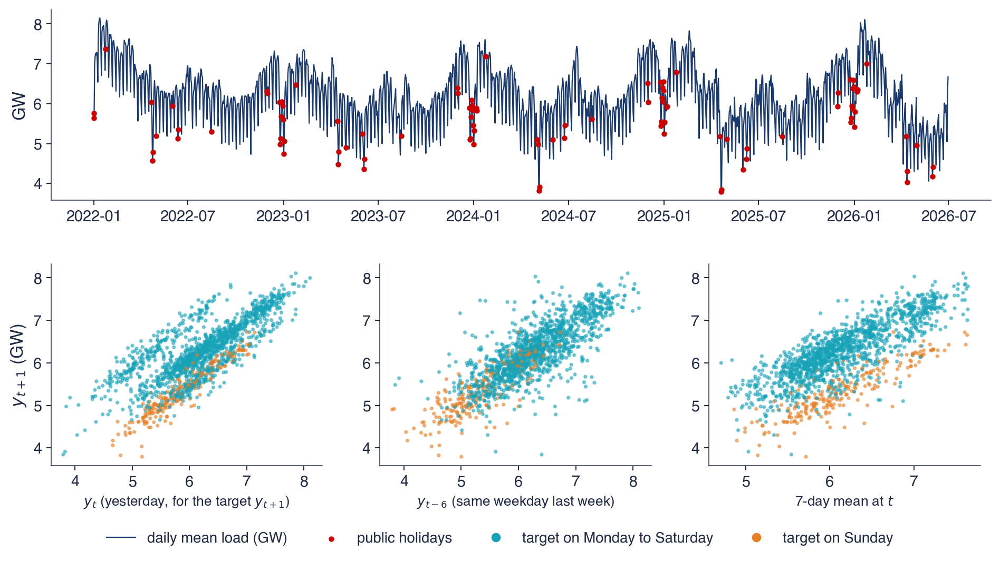
Consumul mediu zilnic al României, ENTSO-E (rețeaua europeană a operatorilor de transport și de sistem pentru energie electrică), 1 ianuarie 2022–30 iunie 2026, 1 642 de zile; jos: consumul de mîine față de trei variabile explicative
Consumul mediu pe eșantion este 6,18 GW. Minimul, 3,79 GW, a fost atins pe 20 aprilie 2025, duminica Paștelui ortodox, iar maximul, 8,15 GW, pe 13 ianuarie 2022, într-o săptămînă de iarnă. Ciclul săptămînal, ciclul anual al încălzirii și răcirii și scăderile de sărbători formează împreună sezonalitatea multiplă studiată în Capitolul 4.
Corelațiile măsoară cît spune fiecare variabilă despre consumul de mîine: 0,77 pentru consumul de azi, 0,82 pentru aceeași zi a săptămînii trecute și 0,74 pentru media pe 7 zile. Lagul aceleiași zile a săptămînii este cea mai bună variabilă luată separat, deoarece poartă cu el ciclul săptămînal. Doar cu consumul de azi, țintele de duminică formează un nor separat, sub celelalte, deci o singură funcție liniară de \(y_t\) nu poate reprezenta tiparul săptămînal; modelul are nevoie fie de ziua săptămînii, fie de lagul potrivit.
Tabelul folosit în restul capitolului are 1614 rînduri și 30 de variabile explicative: 14 laguri, două medii mobile, valoarea din aceeași zi a săptămînii trecute și variabile de calendar (variabile binare pentru zilele săptămînii, indicatori de sărbătoare și termeni Fourier). Primele rînduri se pierd din cauza celor 14 laguri, de aceea tabelul are mai puține rînduri decît zile.
Pe scurt
Media 6,18 GW; minimul 3,79 GW pe 20 aprilie 2025 (Paștele ortodox), maximul 8,15 GW pe 13 ianuarie 2022 (o săptămînă de iarnă)
ciclul săptămînal, ciclul anual (încălzire iarna, răcire vara) și scăderi mari de sărbători: sezonalitatea multiplă din Capitolul 4
Corelația cu consumul de mîine: \(y_t\) 0,77; aceeași zi a săptămînii trecute 0,82; media pe 7 zile 0,74
doar cu \(y_t\), duminicile formează un nor separat: un singur lag liniar nu poate reprezenta tiparul săptămînal
tabelul folosit mai departe are 1 614 de rînduri și 30 de variabile explicative (14 laguri, două medii, aceeași zi a săptămînii, calendar)
O prognoză pentru mai multe zile înainte, \(h = 1, \dots, H\), se poate produce în trei feluri. Strategia recursivă, sau iterată, antrenează un singur model pentru \(h = 1\). Prognoza lui, \(\hat y_{T+1}\), înlocuiește valoarea necunoscută \(y_{T+1}\) în laguri, iar același model se aplică din nou pentru a obține \(\hat y_{T+2}\) și așa mai departe. Așa prognozează modelele ARIMA (Capitolul 3). Strategia are nevoie de un singur model, dar dacă modelul pe un pas este greșit, erorile lui sînt reintroduse ca intrări și se acumulează odată cu orizontul.
Strategia directă antrenează un model separat \(\hat f_h\) pentru fiecare orizont, cu ținta \(y_{t+h}\). Nicio prognoză nu este reintrodusă, deci erorile nu se acumulează. Costul constă în \(H\) modele în loc de unul, mai puține rînduri complete pentru orizonturile lungi și prognoze pentru orizonturi vecine care provin din modele diferite și nu formează neapărat o traiectorie coerentă.
Strategia cu ieșiri multiple (MIMO, multiple-input multiple-output) antrenează un singur model care întoarce deodată întregul vector \((\hat y_{T+1}, \dots, \hat y_{T+H})\). Ea se potrivește rețelelor neuronale, al căror strat de ieșire poate avea \(H\) unități. Ben Taieb et al. (2012) trec în revistă cele trei strategii și le compară pe datele competiției de prognoză NN5.
Pe scurt
Recursivă (iterată): un model pentru \(h = 1\); prognoza lui înlocuiește valoarea necunoscută \(y_{T+1}\) și modelul se aplică din nou
așa prognozează ARIMA (Capitolul 3); erorile se acumulează cînd modelul pe un pas este greșit
Directă: un model separat \(\hat f_h\) pentru fiecare orizont \(h = 1, \dots, H\), antrenat pe ținta \(y_{t+h}\)
erorile nu se acumulează, dar avem \(H\) modele și mai puține rînduri pentru orizonturi lungi; prognozele pentru \(h\) diferite pot fi incoerente
Cu ieșiri multiple (MIMO, multiple-input multiple-output): un model întoarce vectorul \((\hat y_{T+1}, \dots, \hat y_{T+H})\)
Diagrama arată cele trei strategii pentru trei pași înainte. Casetele albastre sînt intrările cunoscute la originea \(T\), cele verzi sînt modelele estimate, iar cele roșii sînt prognozele. În strategia recursivă, din stînga, același model \(f\) se aplică de trei ori, iar săgețile portocalii arată cum fiecare prognoză devine intrare pentru pasul următor.
În strategia directă, la mijloc, aceleași intrări merg la trei modele diferite, \(f_1\),\(f_2\) și \(f_3\), fiecare antrenat pentru orizontul său. În strategia cu ieșiri multiple, din dreapta, un singur model \(f\) produce împreună cele trei prognoze. Diagrama face vizibil compromisul: strategia recursivă refolosește un model și îi propagă erorile, cea directă înmulțește modelele, iar MIMO păstrează un model cu mai multe ieșiri.
Pe scurt
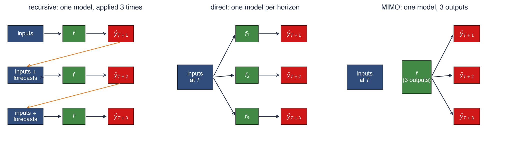
Albastru: intrările cunoscute la originea \(T\); verde: modelele estimate; roșu: prognozele; portocaliu: o prognoză folosită din nou ca intrare
Să presupunem că modelul pe un pas estimat pe tabel este \(\hat y_{t+1} = 1{,}2 + 0{,}8\,y_t\) și că ultima observație este \(y_T = 5\). Prognoza recursivă pentru mîine este \(\hat y_{T+1} = 1{,}2 + 0{,}8 \cdot 5 = 5{,}20\). Pentru poimîine, valoarea necunoscută \(y_{T+1}\) este înlocuită cu 5,20, ceea ce dă \(\hat y_{T+2} = 1{,}2 + 0{,}8 \cdot 5{,}20 = 5{,}36\). Înlocuind prima ecuație în a doua obținem regula implicită pe doi pași: \(\hat y_{T+2} = 1{,}2 + 0{,}8(1{,}2 + 0{,}8\,y_T) = 2{,}16 + 0{,}64\,y_T\).
Strategia directă estimează o regresie separată, cu ținta \(y_{t+2}\). Să presupunem că ea dă \(\hat y_{t+2} = 2{,}3 + 0{,}6\,y_t\), deci prognoza directă este \(\hat y_{T+2} = 2{,}3 + 0{,}6 \cdot 5 = 5{,}30\). Dacă seria ar fi într-adevăr un AR(1), regresia directă ar estima, pînă la erorile de eșantionare, aceiași coeficienți ca regula implicită, 2,16 și 0,64.
Coeficienți diferiți semnalează că modelul pe un pas este greșit specificat la doi pași, de exemplu pentru că seria are un tipar săptămînal pe care un singur lag nu îl poate purta. Modelul direct se adaptează orizontului pentru care este antrenat, în timp ce modelul recursiv extrapolează o regulă pe un pas. Nicio strategie nu este întotdeauna mai precisă, de aceea alegerea se face pe datele de validare.
Pe scurt
Modelul pe un pas estimat pe tabel: \(\hat y_{t+1} = 1{,}2 + 0{,}8\,y_t\); ultima valoare \(y_T = 5\)
O prognoză este o predicție a lui \(y_{t+h}\) din variabile cunoscute la originea \(t\): laguri, statistici pe ferestre mobile și variabile de calendar ale zilei-țintă. Un AR(\(p\)) este o regresie liniară pe laguri, deci învățarea automată schimbă funcția, nu tabelul. Prognozele pe mai mulți pași sînt recursive (un model, iterat), directe (un model pentru fiecare orizont) sau cu ieșiri multiple (un model cu \(H\) ieșiri).
Pe scurt
O prognoză este o predicție a lui \(y_{t+h}\) din variabile cunoscute la \(t\): laguri, statistici pe ferestre mobile, calendar
Un AR\((p)\) este o regresie liniară pe laguri; ML schimbă funcția, nu tabelul
Pe mai mulți pași: recursiv (un model, iterat), direct (un model pentru fiecare \(h\)), MIMO (un model, \(H\) ieșiri)
Sinteza secțiunii
Transformarea seriei într-un tabel este ceea ce face învățarea automată aplicabilă prognozei, dar tot aici pot intra primele erori. Fiecare variabilă trebuie să poată fi calculată la origine, calendarul zilei-țintă trebuie inclus explicit, iar strategia pentru mai multe orizonturi este o alegere de modelare care se validează ca oricare alta.
Validare fără leakage
O metodă de prognoză este credibilă doar în măsura în care este corect evaluată. Secțiunea definește eșantioanele de antrenare, validare și test pentru serii de timp, compară patru scheme de validare, descrie leakage-ul (scurgerea de informație), cea mai frecventă sursă de rezultate false, și îl arată pe un mers aleator și pe S&P 500. Ea se încheie cu descompunerea deplasare–varianță, care explică de ce complexitatea unui model trebuie aleasă pe date pe care modelul nu le-a văzut.
Datele au trei roluri. Eșantionul de antrenare estimează parametrii modelului, eșantionul de validare îi alege hiperparametrii, iar eșantionul de test măsoară acuratețea finală. Eșantionul de test se folosește o singură dată, la final: dacă servește la alegerea între modele, devine un al doilea eșantion de validare, iar eroarea lui nu mai este o estimare onestă. Pentru o serie de timp cele trei eșantioane sînt blocuri consecutive, în această ordine, astfel încît fiecare model este evaluat pe o perioadă care urmează datelor din care a învățat.
Validarea walk-forward, validarea încrucișată (cross-validation) pentru serii de timp din Capitolul 4, repetă această împărțire. Modelul este antrenat pe datele de pînă la o origine, prognozează blocul următor, iar originea se mută înainte. Cu o fereastră extinsă (expanding window), eșantionul de antrenare conține toate datele trecute; cu o fereastră mobilă (rolling window), conține doar ultimele \(W\) observații, ceea ce se adaptează mai repede schimbărilor din serie, dar folosește mai puține date. Erorile tuturor originilor se combină în MAE, rădăcina erorii pătratice medii (RMSE) și MASE din Capitolul 0, iar două metode se compară cu testul Diebold–Mariano (Diebold și Mariano, 1995).
Validarea încrucișată cu \(K\) grupuri aleatoare (random K-fold) împarte la întîmplare rîndurile în \(K\) grupuri și folosește fiecare grup o dată ca date de test. Bergmeir, Hyndman și Koo (2018) arată că ea rămîne validă pentru modelele pur autoregresive ale căror erori sînt zgomot alb (white noise), deoarece rîndurile sînt atunci necorelate condiționat. Cînd erorile sînt corelate sau țintele se suprapun, grupurile aleatoare dau erori prea optimiste.
Pe scurt
Eșantionul de antrenare: estimează parametrii; de validare: alege hiperparametrii; de test: măsoară acuratețea finală, folosit o singură dată
pentru serii de timp cele trei eșantioane sînt blocuri consecutive, în această ordine
Validarea walk-forward (validarea încrucișată pentru serii de timp, Capitolul 4): antrenăm pe datele de pînă la o origine, prognozăm blocul următor, mutăm originea înainte
fereastră extinsă: toate datele trecute; fereastră mobilă: ultimele \(W\) observații (se adaptează schimbărilor, folosește mai puține date)
erorile tuturor originilor se combină în MAE, RMSE, MASE (Capitolul 0) și se compară cu testul Diebold–Mariano
Validarea încrucișată cu \(K\) grupuri aleatoare este validă doar pentru autoregresii pure cu erori de tip zgomot alb Bergmeir, Hyndman și Koo (2018)
Fiecare panou arată patru împărțiri ale aceleiași serii de-a lungul axei timpului: celulele albastre sînt date de antrenare, cele roșii date de test, cele aurii un spațiu liber (gap), iar celulele goale sînt date nefolosite. În \(K\)-fold aleator, celulele de test sînt împrăștiate în tot eșantionul, deci modelul este adesea antrenat pe observații care vin după ziua de test: învață din viitor.
Cele trei scheme walk-forward păstrează ordinea în timp. Cu fereastra extinsă, blocul de antrenare crește de la o împărțire la alta; cu fereastra mobilă, are lungime fixă și alunecă înainte. În validarea walk-forward cu spațiu liber, rîndurile de antrenare imediat dinaintea fiecărui bloc de test sînt eliminate. Aceste rînduri au ținte care se întind în perioada de test, de exemplu un randament pe 21 de zile care începe cu cîteva zile înaintea blocului de test, iar spațiul liber le împiedică să aibă informație comună cu rîndurile de test.
Pe scurt
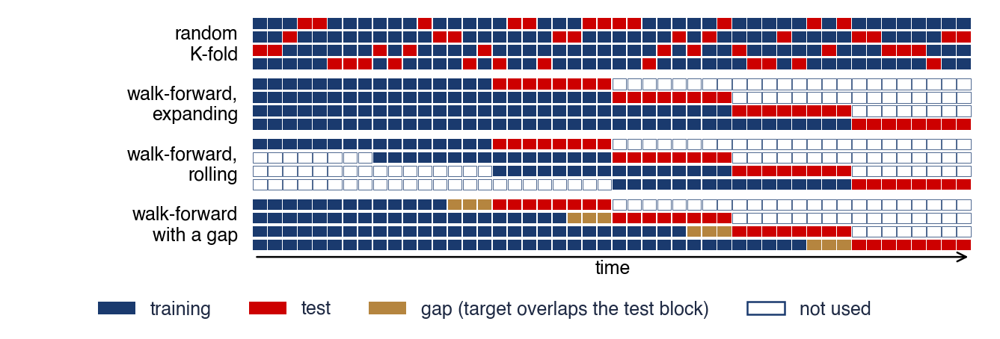
\(K\)-fold aleator amestecă trecutul și viitorul; walk-forward păstrează ordinea; un spațiu (gap) elimină rîndurile de antrenare ale căror ținte se suprapun cu blocul de test
Leakage-ul este folosirea, la antrenare sau în variabile, a unei informații care nu ar fi fost disponibilă la originea prognozei (Kaufman et al., 2012). Efectul lui este mereu același: scoruri de validare care arată excelent și care dispar cînd modelul este folosit pentru prognoze reale. În finanțe aceeași eroare se numește look-ahead bias, deoarece backtesting-ul se uită înainte, la date pe care investitorul nu le putea cunoaște.
Sursele tipice se scapă ușor din vedere. O medie mobilă sau o diferență care include \(y_{t+1}\) conține o parte a țintei; mediile mobile centrate și filtrele bilaterale, precum cele folosite pentru estimarea trendului în Capitolul 0, folosesc prin construcție valori viitoare. Scalarea, completarea valorilor lipsă sau selecția variabilelor estimate pe tot eșantionul înainte de împărțire transferă informație din perioada de test în antrenare. Țintele suprapuse, cum sînt sumele pe următoarele \(h\) zile, produc leakage prin grupuri aleatoare sau prin împărțiri walk-forward fără spațiu liber. Datele macroeconomice revizuite sînt un caz mai subtil: valoarea PIB publicată azi pentru un trimestru trecut nu era cunoscută atunci, iar vremea efectivă nu este prognoza meteo disponibilă la momentul respectiv.
Regula care previne leakage-ul este ca fiecare variabilă să fie scrisă ca funcție doar de datele de pînă la \(t\), iar fiecare pas de preprocesare, de exemplu media și abaterea standard folosite la scalare, să fie reestimat în fiecare fereastră de antrenare.
Pe scurt
Leakage-ul (scurgerea de informație): informație care nu ar fi disponibilă la originea prognozei intră în antrenare sau în variabile Kaufman et al. (2012)
rezultat: scoruri excelente la validare, care dispar la utilizarea reală; în finanțe se numește look-ahead bias
Surse tipice
o medie mobilă sau o diferență care include \(y_{t+1}\); mediile mobile centrate și filtrele bilaterale (Capitolul 0)
scalarea, completarea valorilor lipsă sau selecția variabilelor estimate pe tot eșantionul înainte de împărțire
ținte suprapuse (sume pe următoarele \(h\) zile) cu grupuri aleatoare sau fără spațiu (gap)
date macroeconomice revizuite: versiunea de azi a PIB-ului nu era cunoscută la origine; vremea efectivă în locul prognozei meteo
Regula: scrieți codul variabilelor ca funcție doar de datele de pînă la \(t\) și reestimați fiecare pas de preprocesare în fiecare fereastră de antrenare
Leakage-ul în practică: grupuri aleatoare pe ținte suprapuse
Experimentul arată cît de puternic poate fi leakage-ul. Un random forest prezice suma următoarelor 21 de randamente zilnice, adică aproximativ o lună înainte, din sumele trecute pe 5, 21 și 63 de zile și din volatilitățile trecute. Perechea de bare din stînga folosește un mers aleator (random walk) simulat, pentru care suma viitoare este imprevizibilă prin construcție; cea din dreapta folosește 6631 de randamente zilnice ale S&P 500, din 2000 pînă în 2026.
Axa verticală este \(R^2\) în afara eșantionului (out-of-sample), \(1 - \sum(y - \hat y)^2/\sum(y - \bar y)^2\), în procente. El este pozitiv cînd modelul prognozează mai bine decît media istorică a țintei și negativ cînd prognozează mai slab. Barele roșii provin din validarea încrucișată cu 5 grupuri aleatoare, cele albastre din validarea walk-forward, iar cele verzi din validarea walk-forward cu un spațiu liber de 21 de zile.
Pe scurt
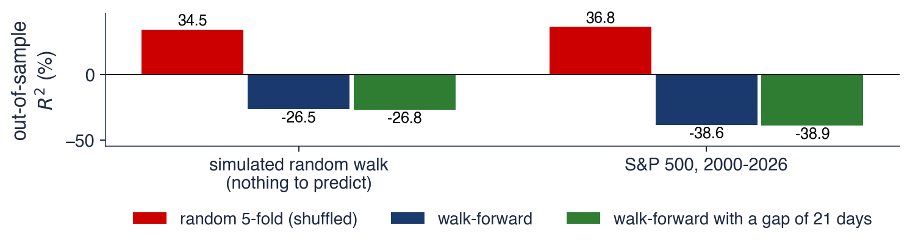
Random forest pentru suma următoarelor 21 de randamente zilnice; variabile: sume trecute pe 5, 21, 63 de zile și volatilități; stînga: un mers aleator simulat; dreapta: S&P 500, 6 631 de zile
Validarea încrucișată cu 5 grupuri aleatoare raportează un \(R^2\) de 34,5% pentru mersul aleator, unde nimic nu este previzibil, și de 36,8% pentru S&P 500. Ambele cifre sînt artefacte. Ținta zilei \(t\) și ținta zilei \(t+1\) au în comun 20 dintre cele 21 de randamente zilnice, deci aproape fiecare rînd de test are aproape-copii printre rîndurile de antrenare din celelalte grupuri, iar random forest pur și simplu le recunoaște.
Validarea walk-forward dă \(-26{,}5\)% pentru mersul aleator și \(-38{,}6\)% pentru S&P 500; cu un spațiu liber de 21 de zile valorile sînt \(-26{,}8\)% și \(-38{,}9\)%. Un \(R^2\) negativ în afara eșantionului înseamnă că random forest prognozează mai slab decît media istorică, rezultatul așteptat pentru randamentele viitoare (Capitolul 1). Spațiul liber schimbă puțin rezultatul aici, deoarece blocurile walk-forward sînt lungi, dar elimină suprapunerea rămasă la marginile lor.
Lecția este generală: un model este atît de bun cît este validarea lui, iar un scor spectaculos pe o problemă cunoscută ca dificilă este un motiv să căutăm un leakage înainte de a-l crede.
Pe scurt
5-fold aleator raportează \(R^2\) = 34,5% pentru un mers aleator, unde nimic nu este previzibil, și 36,8% pentru S&P 500
țintele vecine au în comun 20 din 21 de randamente: un rînd de test are aproape-copii în grupurile de antrenare
Walk-forward: \(-\)26,5% și \(-\)38,6%; cu un spațiu de 21 de zile: \(-\)26,8% și \(-\)38,9%
\(R^2\) negativ în afara eșantionului: random forest este mai slab decît media istorică, cum ne așteptăm pentru randamente (Capitolul 1)
Un model este atît de bun cît este validarea lui; un scor spectaculos este un motiv să căutăm un leakage
Să presupunem că datele urmează \(y = f(x) + \varepsilon\), unde \(f\) este funcția adevărată, iar \(\varepsilon\) un zgomot cu varianța \(\sigma^2\), și că \(\hat f\) este estimată pe un eșantion de antrenare aleator. Pentru o observație nouă \(y_0\) într-un punct \(x_0\), eroarea pătratică așteptată, calculată după eșantioanele de antrenare și după zgomot, se descompune în trei părți:
Primul termen este pătratul deplasării (bias), eroarea sistematică a metodei, mediată după eșantioanele de antrenare. Al doilea este varianța, care măsoară cît se schimbă funcția estimată de la un eșantion de antrenare la altul. Al treilea, \(\sigma^2\), este zgomotul pe care niciun model nu îl poate elimina.
Un model rigid, de exemplu un arbore foarte puțin adînc, are o deplasare mare: ratează o parte a semnalului, situație numită underfitting. Un model foarte flexibil are o deplasare mică, dar o varianță mare: urmărește zgomotul eșantionului său de antrenare, situație numită overfitting, și are o eroare de antrenare mică și o eroare de test mare. Fiecare metodă ML are un parametru care o deplasează de-a lungul acestui compromis, de exemplu adîncimea arborelui, numărul de arbori, penalizarea sau numărul de neuroni ascunși, iar validarea fixează acest parametru.
Pe scurt
Modelul \(y = f(x) + \varepsilon\), \(\Var(\varepsilon) = \sigma^2\); \(\hat f\) estimat pe un eșantion de antrenare aleator
\(f\): funcția adevărată; \(y_0\): o observație nouă în \(x_0\); media se ia după eșantioanele de antrenare și zgomot; \(\sigma^2\): zgomotul pe care niciun model nu îl poate elimina
Overfitting: un model flexibil învață zgomotul; eroare de antrenare mică, eroare de test mare
underfitting: un model rigid ratează semnalul (deplasare mare)
Fiecare metodă ML are un parametru de complexitate (adîncime, număr de arbori, penalizare, neuroni ascunși); validarea îl fixează
Simularea face vizibilă relația (9.1). Funcția adevărată este \(f(x) = \sin(2\pi x)\), zgomotul are abaterea standard \(\sigma = 0{,}3\), deci \(\sigma^2 = 0{,}09\), iar fiecare eșantion de antrenare are 80 de puncte. Arbori de regresie de adîncime 1 pînă la 10 sînt estimați pe 300 de eșantioane de antrenare independente, ceea ce permite calculul exact al deplasării și al varianței ca medii după eșantioane.
Panoul din stînga arată un eșantion de antrenare (punctele), funcția adevărată (negru) și trei arbori estimați. Arborele de adîncime 1 este o singură treaptă și ratează forma sinusoidei. Arborele de adîncime 3 urmărește forma cu cîteva trepte. Arborele de adîncime 10 urmărește puncte individuale și sare în jurul curbei adevărate. Panoul din dreapta reprezintă, în funcție de adîncime, pătratul deplasării, varianța, suma lor plus zgomotul (eroarea de test așteptată, roșu), eroarea de antrenare (linia întreruptă) și varianța zgomotului (linia punctată).
Pe scurt
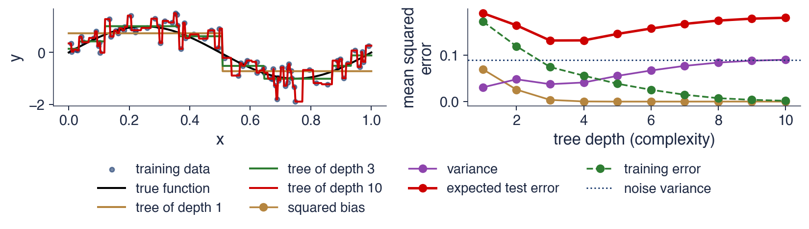
Simulare: \(y = \sin(2\pi x) + \varepsilon\), \(\sigma = 0{,}3\), 80 de puncte, 300 de eșantioane de antrenare; arbori de adîncime 1 pînă la 10
La adîncimea 1, pătratul deplasării este 0,070, iar varianța 0,031; la adîncimea 10, pătratul deplasării este practic 0, iar varianța 0,090. Pe măsură ce adîncimea crește, deplasarea scade și varianța crește, deci eroarea de test așteptată întîi scade și apoi crește, în formă de U. Minimul ei, 0,132, este la adîncimea 3; el se află peste varianța zgomotului, 0,09, pragul sub care niciun model nu poate coborî.
Eroarea de antrenare se comportă altfel: scade continuu și ajunge la 0,002 la adîncimea 10, mult sub varianța zgomotului, deoarece arborele adînc și-a memorat eșantionul. Eroarea de antrenare nu poate deci alege complexitatea; doar datele pe care modelul nu le-a văzut pot face acest lucru. Ansamblurile din secțiunile următoare (random forest și boosting) și penalizările ridge și lasso sînt moduri de a reduce varianța fără a pierde mult în deplasare.
Validarea walk-forward antrenează pe trecut, testează pe blocul următor și merge mai departe; grupurile aleatoare sînt acceptabile doar pentru autoregresii pure cu erori de tip zgomot alb. Leakage-ul intră prin valori viitoare în variabile, preprocesare estimată pe tot eșantionul, ținte suprapuse și date revizuite. Eroarea de test este suma dintre pătratul deplasării, varianță și zgomot, iar validarea fixează complexitatea care echilibrează primii doi termeni.
Pe scurt
Walk-forward: antrenăm pe trecut, testăm pe blocul următor, mergem mai departe; grupuri aleatoare doar pentru autoregresii pure
Leakage-ul: valori viitoare în variabile, preprocesare pe tot eșantionul, ținte suprapuse, date revizuite
Eroarea de test = deplasare\(^2\) + varianță + zgomot; validarea fixează complexitatea
Sinteza secțiunii
O validare onestă păstrează ordinea în timp, reestimează fiecare pas al analizei în fiecare fereastră de antrenare și separă rîndurile ale căror ținte se suprapun. Pe randamente suprapuse pe 21 de zile, grupurile aleatoare transformă un \(R^2\) negativ în afara eșantionului într-un aparent 35%, chiar și pentru un mers aleator. Compromisul deplasare–varianță explică de ce complexitatea se ajustează pe date nevăzute și de ce toate metodele care urmează au un parametru de complexitate.
Modele liniare regularizate: ridge și lasso
Înaintea metodelor neliniare, secțiunea revine la regresia liniară pe laguri, modelul AR din Capitolul 2 cu multe laguri și variabile de calendar. Cu 30 de variabile corelate, metoda celor mai mici pătrate devine instabilă; ridge și lasso adaugă o penalizare pe mărimea coeficienților, care schimbă puțină deplasare pe o reducere mare a varianței. Secțiunea deduce cei doi estimatori, rezolvă un exemplu cu o singură variabilă și arată traiectoriile coeficienților pentru consumul de energie electrică.
Multe laguri, metoda celor mai mici pătrate instabilă
Modelul liniar pe \(p\) variabile prezice \(\hat y = \beta_0 + \sum_j \beta_j x_j\), iar metoda celor mai mici pătrate (ordinary least squares, OLS) alege coeficienții care minimizează suma pătratelor erorilor, \(\sum_t (y_t - \hat y_t)^2\). Cînd variabilele sînt 14 laguri ale unei serii zilnice, lagurile vecine sînt puternic corelate: consumul de ieri și cel de alaltăieri poartă aproape aceeași informație. OLS poate atunci compensa un coeficient pozitiv mare pe un lag cu unul negativ mare pe lagul vecin, fără să schimbe mult ajustarea, astfel încît coeficienții devin mari, de semne opuse, și se schimbă de la o fereastră de antrenare la alta.
Regresiile penalizate măsoară mărimea coeficienților, iar această mărime depinde de unitățile variabilelor. De aceea variabilele se standardizează întîi, \(x_j \to (x_j - \bar x_j)/s_j\), unde \(\bar x_j\) și \(s_j\) sînt media și abaterea standard calculate doar în fereastra de antrenare; calculate pe tot eșantionul, ele ar produce leakage. Fără standardizare, penalizarea ar trata inegal un lag măsurat în GW și o variabilă binară 0/1 pentru ziua săptămînii.
Ideea regularizării (regularisation) decurge din compromisul deplasare–varianță (9.1): contracția coeficienților spre zero (shrinkage) introduce puțină deplasare, dar reduce mult mai mult varianța estimărilor, iar eroarea de test scade.
Pe scurt
Model liniar pe \(p\) variabile standardizate: \(\hat y = \beta_0 + \sum_j \beta_j x_j\); OLS (ordinary least squares, metoda celor mai mici pătrate) minimizează \(\sum_t (y_t - \hat y_t)^2\)
lagurile vecine sînt puternic corelate: coeficienții OLS devin mari, de semne opuse și instabili de la o fereastră la alta
Standardizăm întîi: \(x_j \to (x_j - \bar x_j)/s_j\), cu \(\bar x_j\), \(s_j\) doar din fereastra de antrenare
altfel penalizarea tratează inegal variabilele măsurate în GW și variabilele binare
Ideea regularizării: acceptăm puțină deplasare în schimbul unei scăderi mari a varianței
unde \(\lambda \ge 0\) este penalizarea; \(\lambda = 0\) dă OLS. Cu \(\mathbf{X}\) matricea variabilelor standardizate și \(\mathbf{y}\) vectorul țintelor (ambele centrate, astfel încît \(\beta_0\) dispare), soluția are forma închisă \(\hat\beta = (\mathbf{X}'\mathbf{X} + \lambda\mathbf{I})^{-1}\mathbf{X}'\mathbf{y}\), cu \(\mathbf{I}\) matricea identitate. Adăugarea lui \(\lambda\) pe diagonală face matricea bine condiționată chiar cînd lagurile sînt aproape coliniare. Toți coeficienții se contractă spre 0, dar niciunul nu devine exact 0.
Lasso-ul lui Tibshirani (1996) (least absolute shrinkage and selection operator) folosește în schimb penalizarea \(\lambda\sum_j |\beta_j|\). Valoarea absolută are un colț în zero, iar din această cauză lasso face unii coeficienți exact 0: contractă și selectează variabile în același timp. Cu o singură variabilă standardizată, \(S_{xy} = \sum_t x_ty_t\) și \(S_{xx} = \sum_t x_t^2\), cei doi estimatori au forme explicite:
Formula lasso se numește prag moale (soft thresholding). Cu \(S_{xy} = 90\) și \(S_{xx} = 100\), OLS dă \(90/100 = 0{,}90\); ridge cu \(\lambda = 50\) dă \(90/150 = 0{,}60\); lasso cu \(\lambda = 40\) dă \((90 - 20)/100 = 0{,}70\); iar pentru orice \(\lambda \ge 180\) coeficientul lasso este exact 0. Penalizarea \(\lambda\) este un hiperparametru, ales prin validare walk-forward (TimeSeriesSplit), niciodată prin grupuri aleatoare.
formă închisă \(\hat\beta = (\mathbf{X}'\mathbf{X} + \lambda\mathbf{I})^{-1}\mathbf{X}'\mathbf{y}\); toți coeficienții se contractă spre 0, niciunul nu devine exact 0
O traiectorie a coeficienților arată fiecare coeficient în funcție de penalizare. Cele două panouri folosesc aceeași problemă: consumul de mîine ca țintă, cele 30 de variabile standardizate ale tabelului de consum și datele de pînă la 30 iunie 2025, 1249 de rînduri. Penalizarea scade de la stînga la dreapta, pe o scară logaritmică, deci fiecare panou pornește de la un model puternic penalizat, cu toți coeficienții 0, și se termină aproape de OLS. Axa verticală este coeficientul, în GW la o abatere standard a variabilei.
Șapte variabile sînt evidențiate color: consumul de azi (lag0), aceeași zi a săptămînii trecute (same_dow), media pe 7 zile (mean7), variabila binară pentru sîmbătă și indicatorii pentru Paște, Crăciun și sărbători; liniile subțiri sînt celelalte variabile. În panoul ridge toate liniile pleacă împreună din zero și cresc lin. În panoul lasso liniile pleacă din zero una după alta, iar unele rămîn la zero pe un interval larg de penalizări. Linia roșie întreruptă marchează penalizarea lasso aleasă prin validare walk-forward.
Pe scurt
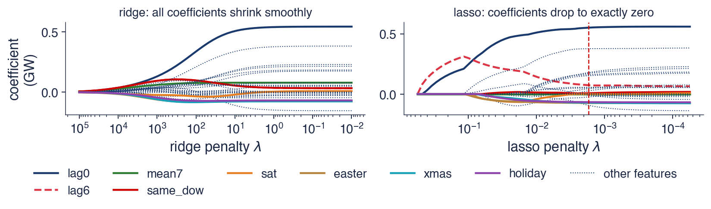
Ținta: consumul de mîine; 30 de variabile standardizate; date pînă la 30 iunie 2025 (1 249 de rînduri); linia întreruptă: penalizarea lasso aleasă prin validare walk-forward
Cu o penalizare mare, toți coeficienții sînt aproape de 0. Cînd \(\lambda\) scade, lasso admite întîi lagul aceleiași zile a săptămînii trecute, apoi consumul de azi și lagul de 13 zile; consumul de azi ajunge repede să domine și se termină cu un coeficient de 0,55 GW la o abatere standard. La penalizarea aleasă, următorii coeficienți ca mărime sînt cei ai variabilelor binare ale zilelor, cel mai mare fiind al variabilei pentru luni, 0,38 GW: după persistența seriei, calendarul poartă cea mai mare parte din semnalul rămas.
La penalizarea aleasă prin validare, lasso păstrează 22 din cele 30 de variabile. Multe laguri devin redundante odată ce consumul de azi, ziua săptămînii și sărbătorile sînt în model; este multicoliniaritatea de pe slide-ul anterior, rezolvată prin selecție. Ridge păstrează toate cele 30 de variabile și le contractă lin. Pe cele 26 de origini de test din secțiunea 6, ridge se dovedește cel mai precis model ML, la fel de precis ca cel mai bun model statistic din Capitolul 4.
Pe scurt
Cu o penalizare mare toți coeficienții sînt aproape de 0; cînd \(\lambda\) scade, intră primele lag6 (\(y_{t-6}\), aceeași zi a săptămînii ca ținta), lag0 (\(y_t\)) și lag13; la penalizarea aleasă domină \(y_t\), cu coeficientul 0,55 GW la o abatere standard
următorii coeficienți ca mărime sînt cei ai variabilelor binare ale zilelor (lunea 0,38): calendarul poartă cea mai mare parte din semnalul rămas
La penalizarea aleasă, lasso păstrează 22 din 30 de variabile: multe laguri sînt redundante cînd \(y_t\), ziua săptămînii și sărbătorile sînt incluse
Ridge păstrează totul, dar contractă lin; pe originile de test din secțiunea 6, ridge este cel mai bun model ML
Ridge și lasso sînt cele mai mici pătrate penalizate: penalizarea ridge \(\lambda\sum\beta_j^2\) contractă toți coeficienții, penalizarea lasso \(\lambda\sum|\beta_j|\) îi contractă și îi face pe unii zero. Variabilele se standardizează în fiecare fereastră de antrenare, iar \(\lambda\) se alege prin walk-forward. O autoregresie regularizată cu variabile de calendar este un reper puternic, pe care orice metodă neliniară trebuie să îl depășească.
Pe scurt
Cele mai mici pătrate penalizate: ridge \(\lambda\sum\beta_j^2\) contractă; lasso \(\lambda\sum|\beta_j|\) contractă și selectează
Standardizăm în fiecare fereastră de antrenare; alegem \(\lambda\) prin walk-forward
Un AR regularizat cu variabile de calendar este un reper ML puternic
Sinteza secțiunii
Penalizările fac stabil un model liniar cu multe laguri corelate. Ridge contractă fiecare coeficient, lasso și selectează; pentru consumul de energie electrică, lasso păstrează 22 din 30 de variabile, conduse de consumul de azi și de calendar. Deoarece structura liniară este adesea aproape corectă pentru seriile sezoniere, o regresie ridge bine specificată este reperul pentru metodele neliniare din secțiunile următoare.
Arbori, random forest și gradient boosting
Arborii de regresie surprind neliniaritățile și interacțiunile fără să li se spună unde sînt, dar un singur arbore este instabil. Random forest face media multor arbori pentru a le reduce varianța, iar gradient boosting adaugă arbori mici unul cîte unul pentru a le reduce deplasarea. Secțiunea explică cele trei metode, le compară pe consumul de energie electrică, arată principala limită a tuturor metodelor bazate pe arbori, incapacitatea de a extrapola, și măsoară ce variabile folosește un model estimat.
Un arbore de regresie (regression tree) împarte spațiul variabilelor printr-o succesiune de întrebări cu răspuns da/nu de forma „\(x_j \le c\)?”. Fiecare întrebare împarte un grup de rînduri de antrenare în două, iar fiecare grup final, numit frunză (leaf), prezice media țintei din rîndurile sale de antrenare. Împărțirile se aleg lacom (greedy), una cîte una: în fiecare nod algoritmul încearcă fiecare variabilă \(j\) și fiecare prag \(c\) și păstrează perechea care dă cea mai mică sumă a pătratelor erorilor în cele două grupuri-descendent.
Arborii au două puncte tari pentru prognoză. Ei surprind efecte neliniare și interacțiuni, de exemplu un efect al zilei săptămînii care diferă între iarnă și vară, fără ca analistul să le specifice, și nu necesită scalarea variabilelor, deoarece o împărțire depinde doar de ordinea valorilor. Punctele slabe sînt la fel de clare: un singur arbore este instabil, pentru că o mică schimbare a datelor poate schimba prima împărțire și, odată cu ea, întregul arbore, iar predicția lui este o funcție în trepte.
Cea mai importantă limită pentru serii de timp este că un arbore nu poate extrapola. Prognoza lui este întotdeauna media unor ținte din antrenare, deci nu poate depăși niciodată cea mai mare țintă și nu poate coborî sub cea mai mică țintă văzută la antrenare. Pentru seriile cu trend, remediul este modelarea diferențelor, a ratelor de creștere sau a abaterilor de la trend, niciodată a nivelurilor.
Pe scurt
Un arbore de regresie împarte spațiul variabilelor prin întrebări „\(x_j \le c\)?” și prognozează, în fiecare regiune finală (frunză), media țintei din rîndurile de antrenare ale acesteia
împărțirea se alege lacom (greedy): perechea \((j, c)\) cu cea mai mică sumă a pătratelor erorilor celor doi descendenți
Puncte tari: neliniaritate și interacțiuni (ziua săptămînii \(\times\) sezon) fără să le specificăm; nu necesită scalare
puncte slabe: un singur arbore este instabil (varianță mare) și constant pe porțiuni
Un arbore nu poate extrapola: prognoza lui este întotdeauna o medie a unor ținte din antrenare
pentru serii cu trend: modelăm diferențe, rate de creștere sau abaterea de la trend, nu niveluri
Arborele este estimat pe datele de consum de pînă la 30 iunie 2025, 1249 de zile, cu patru variabile: consumul de azi (lag0), consumul din aceeași zi a săptămînii trecute (same_dow) și indicatorii de weekend și de sărbătoare. Adîncimea lui este limitată la 2, deci pune cel mult două întrebări, iar fiecare frunză trebuie să conțină cel puțin 20 de zile.
Fiecare casetă arată regula de împărțire, numărul de zile de antrenare care ajung în nod (samples) și consumul mediu al acestor zile, în GW (value). Rădăcina conține toate cele 1249 de zile, cu media 6,19 GW. Zilele care satisfac regula merg pe ramura stîngă (True), celelalte pe ramura dreaptă (False). Ramura stîngă se împarte din nou după consumul aceleiași zile a săptămînii trecute, la 5,5 GW, iar ramura dreaptă după consumul de azi, la 6,94 GW.
Pe scurt
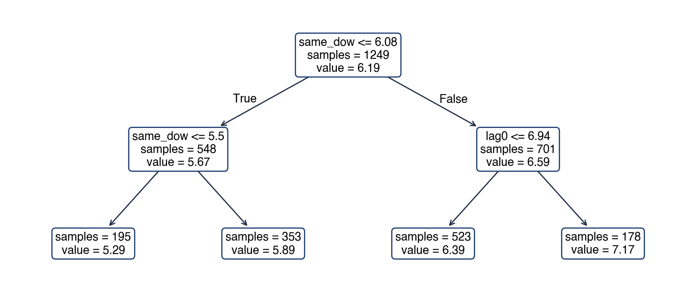
Variabile: \(y_t\) (lag0), aceeași zi a săptămînii trecute (same_dow), indicatori de weekend și de sărbătoare; date pînă la 30 iunie 2025; cel puțin 20 de zile în fiecare frunză
Prima întrebare este dacă, în aceeași zi a săptămînii trecute, consumul a fost sub 6,08 GW. Weekendurile și sărbătorile au consum mic, iar aceeași zi cu o săptămînă înainte a fost de obicei tot o zi de weekend, deci întrebarea le separă de zilele lucrătoare fără nicio variabilă binară pentru zile. Ramura stîngă (548 de zile, media 5,67 GW) separă apoi zilele cu cel mai mic consum de celelalte; ramura dreaptă (701 zile, media 6,59 GW) separă zilele lucrătoare obișnuite de zilele cu cel mai mare consum.
Cele patru frunze prezic 5,29; 5,89; 6,39 și 7,17 GW și conțin 195, 353, 523 și 178 de zile. Aceste patru numere explică deja 64% din varianța consumului de mîine în datele de antrenare (\(R^2 = 0{,}64\)). Arborii mai adînci adaugă detalii, dar și varianță, cum a arătat experimentul deplasare–varianță. Oricare ar fi intrările, prognoza acestui arbore pentru orice zi este una dintre cele patru medii ale frunzelor.
Pe scurt
Prima întrebare: a fost aceeași zi a săptămînii trecute sub 6,08 GW? Separă weekendurile și sărbătorile de zilele lucrătoare
patru frunze: 5,29; 5,89; 6,39 și 7,17 GW, cu 195, 353, 523 și 178 de zile
Patru numere explică deja \(R^2\) = 0,64 din varianță la antrenare; arborii mai adînci adaugă detalii și varianță
Prognoza pentru orice zi este una dintre aceste patru medii
Bagging-ul (bootstrap aggregation) reduce varianța arborilor prin mediere. El extrage \(B\) eșantioane bootstrap din rîndurile de antrenare (eșantioane de aceeași mărime, extrase cu revenire), crește un arbore adînc pe fiecare și face media prognozelor lor. Dacă fiecare arbore are varianța \(\sigma^2\), iar doi arbori au corelația \(\rho\), media a \(B\) arbori are varianța
unde \(T_b\) este al \(b\)-lea arbore. Al doilea termen dispare cînd \(B\) crește, dar primul rămîne: medierea nu poate elimina varianța pe care arborii o au în comun.
Random forest-ul lui Breiman (2001) atacă primul termen. La fiecare împărțire se încearcă doar o submulțime aleatoare de variabile (hiperparametrul max_features), astfel încît arborii diferă mai mult între ei, \(\rho\) scade, iar varianța mediei scade odată cu el. Principalii hiperparametri sînt numărul de arbori, unde mai mulți arbori nu înrăutățesc niciodată rezultatul, ci doar măresc timpul de calcul, mărimea submulțimii de variabile și dimensiunea minimă a frunzei.
Bootstrap-ul extrage rîndurile fără să țină seama de ordinea lor în timp. Aceasta nu încalcă regulile secțiunii anterioare, deoarece bootstrap-ul doar construiește modelul în interiorul ferestrei de antrenare, iar evaluarea rămîne walk-forward, pe date ulterioare.
Pe scurt
Bagging (bootstrap aggregation): creștem \(B\) arbori adînci pe eșantioane bootstrap ale rîndurilor și facem media lor
media a \(B\) arbori cu corelația \(\rho\) și varianța \(\sigma^2\) are varianța \(\rho\sigma^2 + (1 - \rho)\sigma^2/B\)
Random forestBreiman (2001): la fiecare împărțire se încearcă doar o submulțime aleatoare de variabile (max_features)
astfel arborii se decorelează (\(\rho\) scade), iar media are o varianță mai mică
Hiperparametri: numărul de arbori (un număr mai mare nu înrăutățește rezultatul, doar mărește timpul de calcul), max_features, dimensiunea minimă a frunzei
bootstrap-ul ignoră ordinea în timp în fereastra de antrenare; nu este o problemă, deoarece validarea este walk-forward
Boosting-ul (Friedman, 2001) construiește modelul în sens invers. În loc să facă media unor arbori adînci și independenți, adaugă arbori mici unul după altul, fiecare estimat pe reziduurile modelului curent. Pentru eroarea pătratică, reziduurile sînt gradientul negativ al pierderii în raport cu prognoza curentă, de unde și numele metodei. După \(m\) arbori, modelul este
unde \(g_m\) este al \(m\)-lea arbore mic, iar \(\nu\), rata de învățare (learning rate), de obicei între 0,01 și 0,3, îi scalează contribuția. O rată de învățare mică face fiecare pas prudent, deci modelul are nevoie de mai mulți arbori, dar face mai puțin overfitting.
Un exemplu rezolvat arată un pas. Țintele sînt 5, 6 și 8. Modelul pornește de la media lor, \(F_0 = 6{,}33\), deci reziduurile sînt \(-1{,}33\),\(-0{,}33\) și \(+1{,}67\). Un arbore cu o singură împărțire (stump) care izolează al treilea punct prezice pentru el reziduul 1,67. Cu \(\nu = 0{,}1\), prognoza pentru acest punct devine \(F_1 = 6{,}33 + 0{,}1 \cdot 1{,}67 = 6{,}50\): se apropie cu o zecime din distanță de țintă, iar arborii următori continuă de la noile reziduuri.
Implementările rapide grupează fiecare variabilă într-o histogramă, ceea ce accelerează mult căutarea împărțirilor: XGBoost (Chen și Guestrin, 2016), LightGBM (Ke et al., 2017) și HistGradientBoostingRegressor din scikit-learn. În restul capitolului, GB înseamnă gradient boosting; cîștigătorii competiției M5 (secțiunea 10) au folosit LightGBM. Numărul de arbori se alege prin oprire timpurie (early stopping), care oprește adăugarea de arbori cînd eroarea pe datele de validare nu mai scade; ceilalți hiperparametri sînt dimensiunea arborilor, rata de învățare și dimensiunea minimă a frunzei.
Pe scurt
BoostingFriedman (2001): adăugăm cîte un arbore mic, fiecare estimat pe reziduurile (gradientul negativ al funcției de pierdere) modelului curent
\(F_m(\mathbf{x}) = F_{m-1}(\mathbf{x}) + \nu\,g_m(\mathbf{x})\); \(F_m\): modelul după \(m\) arbori; \(g_m\): al \(m\)-lea arbore mic; \(\nu\): rata de învățare (0,01–0,3)
Exemplu rezolvat: țintele \(5, 6, 8\); pornim de la medie, \(F_0 = 6{,}33\); reziduurile \(-\)1,33; \(-\)0,33; +1,67
un arbore cu o singură împărțire care izolează al treilea punct prognozează acolo \(1{,}67\); cu \(\nu = 0{,}1\): \(F_1 = 6{,}33 + 0{,}1 \cdot 1{,}67 = 6{,}500\)
Implementările rapide grupează variabilele în histograme: XGBoost Chen și Guestrin (2016), LightGBM Ke et al. (2017), HistGradientBoostingRegressor în scikit-learn
mai departe notăm GB pentru gradient boosting; cîștigătorii M5 (secțiunea 10) au folosit LightGBM
hiperparametri: numărul de arbori cu oprire timpurie pe datele de validare, dimensiunea arborilor, \(\nu\), dimensiunea minimă a frunzei
Un arbore, un random forest și boosting pe datele de consum
Graficul compară cele trei metode pentru consumul de mîine. Ele sînt antrenate pe datele de pînă la 31 decembrie 2024 (1069 de zile) și evaluate pe perioada de validare ianuarie–iunie 2025 (180 de zile). Axa verticală este eroarea pătratică medie (mean squared error, MSE) la validare, în GW². Linia punctată este prognoza naivă sezonieră, consumul din aceeași zi a săptămînii trecute.
Panoul din stînga variază adîncimea maximă a unui singur arbore și a arborilor unui random forest cu 200 de arbori. Panoul din dreapta arată boosting-ul pe măsură ce numărul de arbori crește, pe o scară logaritmică, pentru două rate de învățare, 0,3 și 0,05. Fiecare curbă arată cum răspunde eroarea de validare la parametrul de complexitate al metodei sale.
Pe scurt
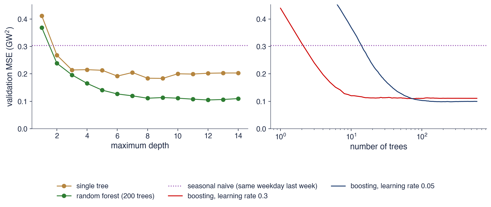
Consumul de mîine; antrenare pînă la 31 decembrie 2024 (1069 de zile), validare ianuarie–iunie 2025 (180 de zile); linia punctată: prognoza naivă sezonieră
Cel mai bun arbore singur atinge o MSE de validare de 0,183 la adîncimea 9, iar curba lui este plată și zgomotoasă după adîncimea 3. Random forest atinge 0,105 la adîncimea 12 și continuă să se îmbunătățească odată cu adîncimea, deoarece medierea elimină cea mai mare parte a varianței pe care o adaugă arborii adînci. Ambele sînt mult sub prognoza naivă sezonieră, a cărei MSE este 0,303.
Boosting-ul cu \(\nu = 0{,}3\) își atinge minimul, 0,110, după 72 de arbori; cu \(\nu = 0{,}05\) are nevoie de 256 de arbori și ajunge la 0,098, cea mai mică valoare din comparație. Este tiparul obișnuit: o rată de învățare mică are nevoie de mai mulți arbori și ajunge puțin mai jos. Oprirea timpurie găsește automat numărul de arbori, în punctul în care eroarea de validare nu mai scade.
Pe scurt
Un singur arbore: cea mai bună MSE (mean squared error, eroarea pătratică medie) la validare, 0,183, la adîncimea 9; random forest: 0,105 la adîncimea 12
media elimină cea mai mare parte a varianței; prognoza naivă sezonieră are 0,303
Boosting cu \(\nu = 0{,}3\): minimul 0,110 după 72 de arbori; cu \(\nu = 0{,}05\): 0,098 după 256 de arbori
o rată de învățare mică are nevoie de mai mulți arbori și ajunge de obicei puțin mai jos; oprirea timpurie alege numărul de arbori
Arborii nu pot extrapola: nivelul prețurilor în România
Graficul arată indicele armonizat al prețurilor de consum (IAPC) al României, publicat de Eurostat cu 2015 = 100, împreună cu prognozele cu o lună înainte a două random forest antrenate pe datele de pînă în decembrie 2020 (linia verticală punctată). Primul folosește ca variabile nivelurile întîrziate ale indicelui și prognozează nivelul. Al doilea folosește variațiile lunare logaritmice ale indicelui și prognozează variația următoare, care se adaugă apoi ultimului nivel observat.
Linia orizontală punctată marchează cel mai mare nivel văzut la antrenare. După 2020 nivelul prețurilor crește abrupt, iar graficul arată ce face fiecare random forest cu valori pe care nu le-a văzut niciodată.
Pe scurt
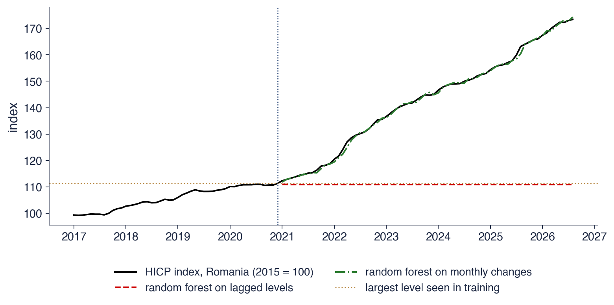
IAPC (indicele armonizat al prețurilor de consum) al României, Eurostat, 2015 = 100; prognoze cu o lună înainte din random forest antrenate pînă în decembrie 2020, pe laguri ale nivelurilor sau pe variațiile lunare logaritmice
Cea mai mare valoare a indicelui în datele de antrenare a fost 111,3; în august 2026 indicele ajunsese la 173,4. Random forest-ul pe niveluri rămîne în jurul valorii 110,8 mai mult de cinci ani, deoarece fiecare prognoză a lui este o medie a unor niveluri din antrenare și niciunul nu depășește 111,3. RMSE-ul lui pe perioada de test este 36,9 puncte de indice.
Același random forest aplicat variațiilor lunare, cu prognozele cumulate pornind de la ultimul nivel observat, urmărește îndeaproape indicele, cu un RMSE de 0,71 puncte de indice. Ratele lunare ale inflației de după 2021 au fost mai mari decît înainte, dar au rămas într-un interval pe care random forest îl putea învăța, în timp ce nivelul a ieșit mult din el. Lecția repetă Capitolul 3: o serie nestaționară se diferențiază sau se transformă înainte ca un arbore să o vadă.
Pe scurt
Cel mai mare indice din antrenare a fost 111,3; în august 2026 indicele a ajuns la 173,4
random forest pe niveluri rămîne în jurul valorii 110,8 timp de cinci ani: RMSE 36,9 puncte de indice
Același random forest pe variațiile lunare, apoi cumulate, urmărește indicele: RMSE 0,71
Din nou Capitolul 3: diferențiem sau transformăm seriile nestaționare înainte ca un arbore să le vadă
Un random forest sau un model de boosting nu are coeficienți care să poată fi citiți, deci felul în care folosește variabilele trebuie măsurat. Importanța prin permutare (permutation importance) amestecă valorile unei variabile în datele de test, ceea ce îi distruge legătura cu ținta păstrîndu-i distribuția, și măsoară cît crește eroarea de prognoză. O variabilă pe care modelul se sprijină produce o creștere mare; o variabilă nefolosită nu produce niciuna. Măsura funcționează pentru orice model și se calculează în afara eșantionului.
Variabilele corelate sînt un punct slab al metodei. Dacă două variabile poartă aceeași informație, amestecarea uneia o lasă pe cealaltă pe loc, deci fiecare pare mai puțin importantă decît este perechea în realitate. Arborii oferă și o importanță bazată pe impuritate (mean decrease impurity, MDI), reducerea totală a erorii pătratice obținută prin împărțirile după fiecare variabilă. Ea se calculează pe datele de antrenare și favorizează variabilele continue, cu multe praguri posibile, de aceea se preferă importanța prin permutare.
Importanța descrie modelul, nu sistemul energetic. O variabilă poate fi importantă pentru că este corelată cu cauza adevărată, iar importanța nu spune nimic despre ce s-ar întîmpla dacă variabila s-ar schimba.
Pe scurt
Importanța prin permutare: amestecăm o variabilă în datele de test și măsurăm cît crește eroarea
nu depinde de tipul modelului; se măsoară în afara eșantionului; variabilele corelate își împart (și își ascund) importanța
Importanța calculată din impuritatea arborilor (MDI, mean decrease impurity) se obține la antrenare și favorizează variabilele continue: preferăm permutarea
Importanța nu înseamnă cauzalitate: descrie modelul, nu sistemul energetic
Importanța prin permutare pentru gradient boosting
Graficul arată importanțele prin permutare pentru două modele directe de gradient boosting, unul pentru consumul de peste o zi și unul pentru consumul de peste 14 zile. Ambele sînt antrenate pe datele de pînă la 31 decembrie 2024 și evaluate pe ianuarie–iunie 2025, iar fiecare variabilă este amestecată de 20 de ori. Barele dau creșterea medie a MAE, în megawați (MW), pentru cele mai importante opt variabile ale fiecărui model.
Numele urmează tabelul de variabile: lag0 este consumul la origine, lagk consumul cu \(k\) zile mai devreme, mean7 și mean28 medii mobile, mon și sat variabilele binare pentru luni și sîmbătă, holiday indicatorul de sărbătoare, iar cos1 și cos2 primii doi termeni Fourier de tip cosinus ai ciclului anual.
Pe scurt
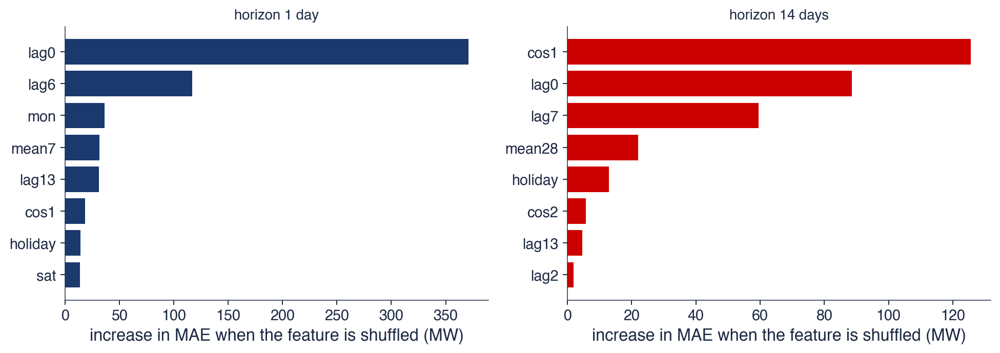
Modele GB directe pentru orizonturile de 1 și 14 zile; antrenate pînă la 31 decembrie 2024, evaluate pe ianuarie–iunie 2025; 20 de permutări aleatoare pentru fiecare variabilă
Cu o zi înainte, două variabile domină. Amestecarea lui lag0 crește MAE cu 371 MW, iar amestecarea lui lag6 cu 117 MW. Pentru ținta \(y_{t+1}\),lag0 este consumul din ziua precedentă, iar lag6 este \(y_{t-6}\), consumul din aceeași zi a săptămînii cu o săptămînă înainte: persistența seriei și ciclul săptămînal.
Cu paisprezece zile înainte ordinea se schimbă: cos1 crește MAE cu 126 MW, iar lag0 cu 89 MW. Valorile recente spun mai puțin despre o zi aflată la două săptămîni distanță, iar ciclul anual, purtat de termenul Fourier, cîștigă importanță. lag0 rămîne important deoarece, pentru \(h = 14\), originea cade în aceeași zi a săptămînii ca ținta, iar lag7 este din nou o valoare din aceeași zi a săptămînii.
Pe scurt
Cu o zi înainte: lag0 (+371 MW de MAE cînd este amestecată) și lag6 (+117 MW) domină
ziua de ieri și aceeași zi a săptămînii trecute: persistența și ciclul săptămînal
Cu paisprezece zile înainte: cos1 (+126 MW) și lag0 (+89 MW)
ciclul anual (cos1, termenul Fourier) cîștigă importanță pe măsură ce valorile recente devin mai puțin informative
Un arbore este o funcție constantă pe porțiuni, găsită prin împărțiri lacome, și nu poate extrapola dincolo de intervalul țintelor sale de antrenare. Random forest face media unor arbori adînci decorelați și reduce varianța; boosting-ul adaugă arbori mici estimați pe reziduuri și reduce deplasarea. Gradient boosting (LightGBM, XGBoost, HistGradientBoosting) se ajustează prin rata de învățare, numărul de arbori și oprirea timpurie. Importanța prin permutare măsoară, în afara eșantionului, ce variabile folosește un model.
Pe scurt
Un arbore este o funcție constantă pe porțiuni, găsită prin împărțiri lacome; nu poate extrapola
Random forest face media unor arbori adînci decorelați (mai puțină varianță); boosting adaugă arbori mici pe reziduuri (mai puțină deplasare)
GB (gradient boosting, LightGBM, XGBoost, HistGradientBoosting): rata de învățare, numărul de arbori, oprirea timpurie
Importanța prin permutare măsoară ce folosește modelul, în afara eșantionului
Sinteza secțiunii
Pentru consumul de energie electrică, ansamblurile de arbori reduc MSE-ul de validare al unui singur arbore de la 0,183 la aproximativ 0,10, față de 0,303 pentru prognoza naivă sezonieră. Metodele bazate pe arbori au nevoie de ținte staționare: pentru nivelul prețurilor, un random forest antrenat pe niveluri rămîne blocat la cea mai mare valoare din antrenare, în timp ce același random forest antrenat pe variațiile lunare urmărește indicele.
Rețele neuronale
Rețelele neuronale sînt aproximatori flexibili de funcții, construiți din straturi de unități simple. Secțiunea prezintă perceptronul multistrat, felul în care se antrenează și două rețele construite pentru secvențe: rețeaua recurentă și rețeaua LSTM (long short-term memory). Secțiunea se încheie cu dovezile despre situațiile în care asemenea rețele ajută la prognoză.
Perceptronul multistrat (multilayer perceptron, MLP) cu un strat ascuns de \(q\) neuroni calculează, pentru un vector de intrări \(\mathbf{x}\),
\[\begin{aligned}
h_j &= g(b_j + \mathbf{w}_j'\mathbf{x}),\quad j = 1, \dots, q, \\
\hat y &= c + \sum_{j=1}^{q} v_j h_j .
\end{aligned}\]
(9.5)
Fiecare neuron ascuns \(j\) formează o sumă ponderată a intrărilor, cu ponderile \(\mathbf{w}_j\) și termenul liber \(b_j\), și o trece printr-o funcție de activare (activation function) \(g\). Ieșirea este o combinație liniară a ieșirilor ascunse \(h_j\), cu ponderile \(v_j\) și constanta \(c\). Funcțiile de activare uzuale sînt ReLU, \(\max(0, z)\), tangenta hiperbolică și funcția logistică. Activarea face rețeaua neliniară: cu \(g(z) = z\), întreaga rețea se reduce la o regresie liniară.
Hornik, Stinchcombe și White (1989) au demonstrat că o asemenea rețea poate aproxima oricît de bine orice funcție continuă pe o mulțime mărginită, dacă are suficienți neuroni ascunși. Această proprietate de aproximare universală explică flexibilitatea rețelelor; ea nu spune cîți neuroni sînt necesari și nici cîte date trebuie pentru a-i estima. Numărul parametrilor crește repede: cu 3 intrări și 5 neuroni ascunși există \(3 \cdot 5 = 15\) ponderi de intrare, 5 termeni liberi ascunși, 5 ponderi de ieșire și o constantă de ieșire, în total 26 de parametri.
Imaginea arată Mark I Perceptron, construit la Cornell în jurul anului 1960, prima rețea neuronală antrenabilă, realizată fizic, în hardware.
MLP (multilayer perceptron, perceptron multistrat), un strat ascuns cu \(q\) neuroni:
\(h_j = g(b_j + \mathbf{w}_j'\mathbf{x})\), \(j = 1, \dots, q\); \(\hat y = c + \sum_j v_jh_j\)
\(\mathbf{x}\): intrările; \(\mathbf{w}_j\), \(b_j\): ponderile și termenul liber ale neuronului \(j\); \(h_j\): ieșirea lui; \(v_j\), \(c\): ponderile și termenul liber ale ieșirii
\(g\): funcția de activare (ReLU \(\max(0, z)\), tanh, logistică); cu \(g(z) = z\) rețeaua redevine liniară
Panoul din stînga desenează rețeaua din exemplul pentru consumul de mîine: trei intrări (consumul de azi \(y_t\), consumul din aceeași zi a săptămînii trecute \(y_{t-6}\) și un indicator de sărbătoare), un strat ascuns de cinci neuroni și o ieșire, \(\hat y_{t+1}\). Fiecare linie este o pondere; fiecare neuron ascuns primește toate cele trei intrări, iar ieșirea primește toate cele cinci valori ascunse.
Panoul din dreapta reprezintă cele trei funcții de activare. Funcția logistică urcă de la 0 la 1, iar tangenta hiperbolică de la \(-1\) la 1, ambele lin și ambele plate în cozi; ReLU este 0 pentru argumente negative și identitatea pentru cele pozitive. Cozile plate ale primelor două fac derivatele lor mici pentru intrări mari, ceea ce încetinește antrenarea rețelelor adînci; ReLU evită acest lucru pentru argumente pozitive, unul dintre motivele popularității sale.
Pe scurt
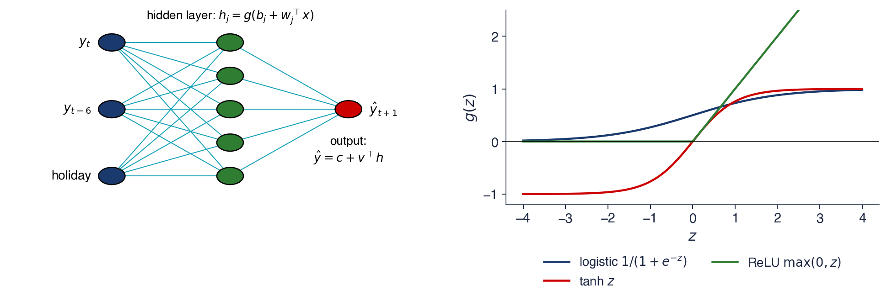
Stînga: 3 intrări (ziua de ieri, aceeași zi a săptămînii trecute, indicatorul de sărbătoare), 5 neuroni ascunși, o ieșire; dreapta: trei funcții de activare
O rețea se antrenează minimizînd pierderea de antrenare prin coborîre pe gradient (gradient descent): ponderile se mută cu pași mici în sens opus gradientului pierderii. Gradientul în raport cu fiecare pondere se calculează prin retropropagare (back-propagation) (Rumelhart, Hinton și Williams, 1986), o aplicare a regulii de derivare a funcțiilor compuse care trimite eroarea de la ieșire înapoi prin straturi. Coborîrea stochastică pe gradient (SGD) și varianta ei Adam calculează fiecare pas pe un mic lot aleator de rînduri în loc de întregul eșantion; o trecere prin toate datele se numește epocă (epoch).
Pierderea unei rețele, ca funcție de ponderi, are multe minime locale, deci rezultatul depinde de ponderile inițiale aleatoare. De aici decurg două practici: fixarea seminței aleatoare (seed), pentru ca rezultatul să poată fi reprodus, și media cîtorva rețele antrenate din semințe diferite, care formează un ansamblu cu o varianță mai mică.
Rețelele fac ușor overfitting și se regularizează în trei moduri principale: o penalizare L2 pe ponderi, ca în regresia ridge; oprirea timpurie pe datele de validare, ca la boosting; și dropout, care dezactivează aleator neuroni în timpul antrenării. Intrările și țintele trebuie standardizate, cu statisticile ferestrei de antrenare. Cu cîteva mii de rînduri, ca în datele de consum, sînt potrivite rețelele mici; rețelele adînci au nevoie de multe serii sau de date lungi, de frecvență înaltă.
Pe scurt
Minimizăm pierderea la antrenare prin coborîre pe gradient; gradienții se obțin prin retropropagare (back-propagation) Rumelhart, Hinton și Williams (1986)
SGD (stochastic gradient descent) și Adam folosesc loturi mici aleatoare; o trecere prin date este o epocă
Suprafața pierderii are multe minime locale: rezultatele depind de ponderile inițiale aleatoare
fixăm sămînța și facem media cîtorva rețele cu semințe diferite (un ansamblu)
Regularizare: o penalizare L2 pe ponderi, oprirea timpurie, dropout (dezactivarea aleatoare a unor neuroni)
intrările și țintele trebuie standardizate cu statisticile ferestrei de antrenare
Datele puține (cîteva mii de rînduri) favorizează rețelele mici; rețelele adînci au nevoie de multe serii sau de date lungi, de frecvență înaltă
O rețea neuronală recurentă (recurrent neural network, RNN) citește o secvență pas cu pas și poartă o stare ascunsă care rezumă trecutul. La fiecare pas starea se actualizează din starea anterioară și noua intrare:
\[h_t = \tanh(W h_{t-1} + U x_t + b) ,\]
unde \(x_t\) este intrarea la momentul \(t\),\(h_t\) starea ascunsă, iar \(W\),\(U\) și \(b\) sînt ponderi și un termen liber comune tuturor pașilor. Tangenta hiperbolică ține fiecare componentă a stării între \(-1\) și 1. Prognoza se citește din ultima stare, de exemplu \(\hat y_{t+1} = v'h_t + c\). Folosirea acelorași ponderi la toți pașii permite aceleiași rețele să proceseze secvențe de orice lungime.
Antrenarea unei RNN înseamnă derivarea prin mulți pași, ceea ce înmulțește multe derivate de forma \(\partial h_t/\partial h_{t-1}\). Dacă ele sînt mai mici decît 1, produsul se apropie de zero (gradienții dispar, vanishing gradients); dacă sînt mai mari decît 1, produsul explodează. În practică, o RNN simplă nu poate învăța dependențe care se întind mai mult de cîțiva pași în urmă.
Sinteza lui Hewamalage, Bergmeir și Bandara (2021) rezumă dovezile pentru prognoză. Pe serii unice și scurte, rețelele recurente sînt rareori mai precise decît ETS sau ARIMA. Ele devin competitive cu multe serii înrudite și suficiente date, ca modele globale de tipul DeepAR (Salinas et al., 2020), care antrenează o singură rețea pe mii de serii.
Pe scurt
RNN (recurrent neural network, rețea neuronală recurentă): o stare ascunsă duce trecutul mai departe, cu aceleași ponderi la fiecare pas
\(h_t = \tanh(Wh_{t-1} + Ux_t + b)\): noua stare combină starea anterioară și noua intrare
\(x_t\): intrarea la momentul \(t\); \(h_t\): starea ascunsă; \(W\), \(U\), \(b\): ponderile și termenul liber, comune tuturor pașilor; \(\tanh\) ține fiecare componentă în \((-1, 1)\)
prognoza se citește din ultima stare, de exemplu \(\hat y_{t+1} = v'h_t + c\)
Dificultatea: antrenarea prin mulți pași înmulțește multe derivate
gradienții dispar sau explodează: un RNN simplu uită ce s-a întîmplat cu mai mult de cîțiva pași în urmă
Rețeaua LSTM a lui Hochreiter și Schmidhuber (1997) adaugă o stare a celulei (cell state) \(c_t\), actualizată aditiv și controlată de trei porți (gates). Fiecare poartă este un vector de numere între 0 și 1, calculat de un strat logistic din ieșirea anterioară și noua intrare:
Aici \(\sigma(z) = 1/(1 + e^{-z})\) este funcția logistică, \([h_{t-1}, x_t]\) pune cei doi vectori unul sub altul, iar \(W_f, W_i, W_o, W_c\) și \(b_f, b_i, b_o, b_c\) sînt ponderi și termeni liberi. Poarta de uitare \(f_t\), poarta de intrare \(i_t\) și poarta de ieșire \(o_t\) decid ce se păstrează, ce se adaugă și ce se transmite mai departe; \(\tilde c_t\) este conținutul nou propus.
unde \(\odot\) este produsul element cu element. Cînd poarta de uitare este aproape de 1, memoria veche trece aproape neschimbată prin mulți pași, iar gradientul ei la fel, ceea ce rezolvă problema gradienților care dispar din RNN simplă. Prețul este numărul de ponderi: fiecare poartă este un strat complet, iar un LSTM cu 32 de unități și 8 intrări are circa 5400 de ponderi, de patru ori mai multe decît o RNN simplă de aceeași mărime.
Pe scurt
LSTM (long short-term memory) Hochreiter și Schmidhuber (1997): o stare a celulei \(c_t\) actualizată aditiv, controlată de trei porți
conținutul nou propus: \(\tilde c_t = \tanh(W_c[h_{t-1}, x_t] + b_c)\)
\(\sigma(z) = 1/(1 + e^{-z}) \in (0, 1)\): funcția logistică; \([h_{t-1}, x_t]\): cei doi vectori puși unul sub altul; \(W_f, W_i, W_o, W_c\) și \(b_f, b_i, b_o, b_c\): ponderile și termenii liberi
Actualizarea celulei și a ieșirii
\(c_t = f_t \odot c_{t-1} + i_t \odot \tilde c_t\): cu \(f_t\) apropiat de 1 memoria veche se păstrează pe mulți pași; \(i_t\) stabilește cît conținut nou intră
\(h_t = o_t \odot \tanh(c_t)\): poarta de ieșire decide ce parte a memoriei este transmisă mai departe; \(\odot\): produsul element cu element
Fiecare poartă este un mic strat logistic: un LSTM cu 32 de unități și 8 intrări are circa 5 400 de ponderi
Diagrama din stînga desfășoară o RNN pe trei pași. Fiecare casetă verde este starea ascunsă la un moment, fiecare casetă albastră o intrare, iar săgețile roșii duc starea mai departe, cu aceleași ponderi la fiecare pas; prognoza \(\hat y_{t+1}\) se citește din ultima stare.
Diagrama din dreapta arată celula LSTM. Linia roșie este starea celulei, care curge de la \(c_{t-1}\) la \(c_t\) ca o memorie lungă; cele trei porți acționează asupra ei de jos. Poarta de uitare scalează memoria veche, poarta de intrare admite conținut nou, iar poarta de ieșire alege ce parte a memoriei devine ieșirea \(h_t\). Ecuațiile de sub diagramă sînt cele din (9.6).
Pe scurt
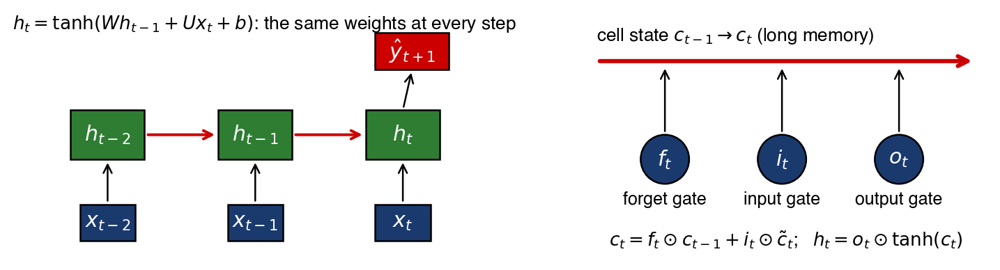
Stînga: RNN desfășurată pe trei pași; dreapta: starea celulei LSTM (roșu) și cele trei porți; \(\odot\): produsul element cu element
În lucrarea de diplomă din 1991, la München, Sepp Hochreiter a analizat de ce gradienții rețelelor recurente dispar pe secvențe lungi. Împreună cu Jürgen Schmidhuber a propus apoi LSTM (Hochreiter și Schmidhuber, 1997), a cărui stare a celulei, actualizată aditiv, lasă gradientul să treacă prin mulți pași.
Lucrarea a devenit una dintre cele mai citate din domeniul rețelelor neuronale. Rețelele LSTM au stat mulți ani la baza sistemelor de recunoaștere a vorbirii și de traducere automată, pînă cînd transformer-ele, arhitectura din spatele foundation models din Capitolul 11, le-au înlocuit în cele mai multe dintre aceste sarcini.
Un MLP suprapune straturi de unități \(g(b + \mathbf{w}'\mathbf{x})\) și se antrenează prin coborîre pe gradient; sămînța, scalarea datelor, penalizarea L2 și oprirea timpurie decid dacă antrenarea reușește. RNN și LSTM procesează secvențe, iar starea celulei LSTM evită dispariția gradienților. Datele puține favorizează modelele mici; rețelele neuronale devin competitive cu multe serii sau cu date lungi.
Pe scurt
MLP: straturi de \(g(b + \mathbf{w}'\mathbf{x})\); antrenat prin coborîre pe gradient; sămînța, scalarea, penalizarea L2, oprirea timpurie
Datele puține favorizează modelele mici; rețelele neuronale au nevoie de multe serii sau de date lungi
Sinteza secțiunii
Rețelele neuronale pot aproxima orice funcție continuă, dar această flexibilitate se plătește cu date și cu o antrenare atentă. Pentru o singură serie zilnică cu cîteva mii de observații, un MLP mic este un candidat rezonabil; rețelele recurente și LSTM sînt construite pentru secvențe lungi și multe serii înrudite, iar secțiunea următoare arată ce se întîmplă cînd sînt aplicate unei singure serii de lungime moderată.
Aplicație: consumul de energie electrică și Capitolul 4
Secțiunea introduce metodele ML în exercițiul de prognoză din Capitolul 4. Modelele statistice din acel capitol și șase modele ML prognozează consumul zilnic de energie electrică al României de la aceleași 26 de origini, pentru aceleași 14 orizonturi, și sînt comparate cu aceleași măsuri de acuratețe și cu testul Diebold–Mariano.
Schema de evaluare este cea din Capitolul 4. Există 26 de origini ale prognozei, cîte una la fiecare 14 zile, de la 30 iunie 2025 la 15 iunie 2026, iar de la fiecare origine fiecare model prognozează următoarele 1–14 zile. Fereastra de antrenare este extinsă: la fiecare origine ea conține toate datele începînd cu 1 ianuarie 2022. Modelele statistice sînt cele din Capitolul 4: prognoza naivă sezonieră, ETS, ARIMA sezonier (SARIMA), regresia armonică dinamică (DHR) și combinația acestor prognoze.
Modelele ML sînt reestimate la fiecare origine. Ridge, un random forest cu 200 de arbori și gradient boosting cu 300 de arbori și rata de învățare \(\nu = 0{,}05\) folosesc strategia directă, cu cîte un model pentru fiecare orizont. Un al doilea model de gradient boosting folosește strategia recursivă, pe tabelul pe un pas. Două rețele neuronale folosesc strategia cu ieșiri multiple: un MLP, mediat pe 3 rețele cu 32 de neuroni ascunși, și un LSTM care citește ultimele 56 de zile și întoarce următoarele 14.
MASE împarte MAE-ul prognozelor la o scală fixă, MAE-ul în eșantion al metodei naive sezoniere săptămînale, 309 MW. O valoare MASE sub 1 înseamnă că modelul este mai precis în afara eșantionului decît este prognoza naivă sezonieră în eșantion.
Tabelul dă, pentru fiecare model, MAE și RMSE, în GW, pe toate cele 364 de prognoze (26 de origini înmulțite cu 14 orizonturi), MASE și p-value-ul testului Diebold–Mariano față de DHR, cel mai precis model. Testul se aplică celor 26 de erori absolute medii pe origine, cu corecția pentru eșantioane mici a lui Harvey, Leybourne și Newbold (1997). Un p-value mic înseamnă că diferența de acuratețe față de DHR este puțin probabil să se datoreze întîmplării.
Tabelul se împarte în trei grupuri. DHR are cel mai mic MAE, 0,276 GW, iar ridge este practic egal, cu 0,277 GW și un RMSE puțin mai mic, 0,337 față de 0,350 GW. MLP (MASE 0,95), gradient boosting direct (0,97), combinația (0,99), gradient boosting recursiv (0,99) și random forest (1,00) formează un grup de mijloc, ale cărui diferențe față de DHR nu sînt semnificative la 5%. Prognoza naivă sezonieră, ETS, SARIMA și LSTM sînt semnificativ mai puțin precise decît DHR, cu p-value-uri de la sub 0,001 la 0,016.
Pe scurt
Model
MAE (GW)
RMSE (GW)
MASE
DM p, față de DHR
Naivă sezonieră
0,396
0,529
1,28
\(<\) 0,001
ETS
0,381
0,492
1,23
0,015
SARIMA
0,384
0,477
1,24
0,003
DHR
0,276
0,350
0,89
–
Combinația
0,305
0,380
0,99
0,065
Ridge
0,277
0,337
0,90
0,942
RF
0,308
0,388
1,00
0,068
GB direct
0,298
0,369
0,97
0,163
GB recursiv
0,307
0,388
0,99
0,113
MLP
0,294
0,362
0,95
0,546
LSTM
0,357
0,447
1,16
0,016
DM: testul Diebold–Mariano pe erorile absolute medii pe origine (26 de valori), cu corecția Harvey–Leybourne–Newbold Harvey, Leybourne și Newbold (1997)
Panoul din stînga ordonează cele unsprezece modele după MASE: barele albastre sînt modelele din Capitolul 4, cele roșii modelele ML, iar linia punctată marchează valoarea 1. DHR, ridge și MLP sînt cel mai departe sub linie; gradient boosting direct și recursiv și combinația sînt imediat sub ea, random forest este la 1,00, iar LSTM, SARIMA, ETS și prognoza naivă sezonieră sînt deasupra ei.
Panoul din dreapta arată MAE pe orizonturi pentru șase modele. Erorile cresc odată cu orizontul pentru fiecare model, dar nu lin: cele mai multe modele au erorile cele mai mari la orizonturile 10, 11 și 14. DHR este cel mai precis model la orizonturile scurte, cu un MAE de 0,18 GW la o zi. Gradient boosting direct rămîne aproape de DHR începînd cu orizontul 3, în timp ce prognoza naivă sezonieră și LSTM au vîrfurile cele mai mari.
Pe scurt
Stînga: MASE pentru cele unsprezece modele (albastru: Capitolul 4; roșu: ML); dreapta: MAE pe orizonturi pentru șase modele
DHR, cu MASE 0,89, și ridge, cu 0,90, sînt cele mai precise modele, iar diferența dintre ele nu este semnificativă (p-value-ul testului Diebold–Mariano este 0,942). Ambele sînt regresii liniare cu variabilele de calendar potrivite: termeni Fourier, efecte ale zilelor săptămînii și variabile binare pentru sărbători. Arborii și rețelele nu le îmbunătățesc.
Gradient boosting direct (MASE 0,97), MLP (0,95) și random forest (1,00) sînt clar mai precise decît prognoza naivă sezonieră, cu p-value-uri Diebold–Mariano de 0,0015, 0,0074 și 0,0015, și au un MASE mai mic decît SARIMA și ETS, o diferență netestată cu Diebold–Mariano. Versiunile directă și recursivă ale gradient boosting sînt apropiate, 0,97 și 0,99, deci aici strategia contează mai puțin decît variabilele. LSTM, cu MASE 1,16, este mai puțin precis decît toate celelalte modele, cu excepția prognozei naive sezoniere, a SARIMA și a ETS.
Lecția exercițiului este că variabilele contează mai mult decît algoritmul. Cu patru ani de date zilnice pentru o singură serie, un model liniar bine specificat, care cunoaște calendarul, este greu de depășit, iar flexibilitatea arborilor și a rețelelor are puțin de adăugat.
Pe scurt
DHR (MASE 0,89) și ridge (0,90) sînt cele mai precise; diferența nu este semnificativă (p = 0,942)
ambele sînt modele liniare cu variabilele de calendar potrivite; arborii și rețelele nu le depășesc
GB direct (0,97), MLP (0,95), random forest (1,00) depășesc clar metoda naivă sezonieră (DM p = 0,0015; 0,0074; 0,0015) și au un MASE mai mic decît SARIMA și ETS (diferență netestată cu DM)
GB direct și recursiv sînt apropiate (0,97 și 0,99); LSTM (1,16) este mai slab decît toate modelele, cu excepția celui naiv, SARIMA și ETS
Lecția: variabilele contează mai mult decît algoritmul; cu patru ani de date zilnice, un model liniar bine specificat este greu de depășit
Graficul se concentrează pe o singură origine, 6 aprilie 2026, cu o săptămînă înaintea Paștelui ortodox din 12 aprilie. Linia neagră este consumul efectiv, iar liniile colorate sînt prognozele pe 14 zile ale cinci modele, începînd de la linia verticală punctată. Consumul efectiv scade la aproximativ 4 GW în duminica Paștelui și rămîne sub nivelul obișnuit în săptămîna următoare.
MAE-ul din această fereastră măsoară cum a tratat fiecare model sărbătoarea: 344 MW pentru DHR, 536 MW pentru gradient boosting direct, 503 MW pentru gradient boosting recursiv și 661 MW pentru LSTM. DHR prognozează cea mai adîncă scădere în duminica Paștelui; modelele cu arbori prognozează una mai mică, iar LSTM și prognoza naivă sezonieră repetă tiparul săptămînal obișnuit, doar cu scăderea de duminică.
Pe scurt
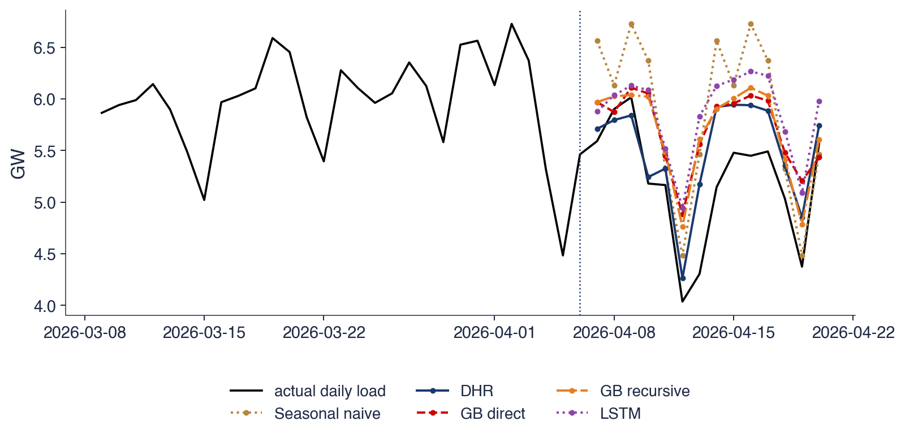
Originea 6 aprilie 2026; prognoze pe 14 zile; MAE în această fereastră: DHR 344 MW, GB direct 536 MW, GB recursiv 503 MW, LSTM 661 MW
Toate modelele, cu excepția LSTM, au indicatorul de Paște printre variabile, dar datele de antrenare conțin doar patru sărbători de Paște ortodox, din 2022 pînă în 2025. Un arbore poate izola zilele de Paște doar printr-o împărțire după indicator, iar cu patru episoade asemenea împărțiri sînt rare și frunzele lor amestecă zilele de Paște cu zile obișnuite, deci scăderea prognozată este prea mică. DHR estimează un singur coeficient pentru Paște din aceleași patru episoade; structura de regresie le combină eficient și dă o scădere de adîncimea potrivită.
LSTM nu primește niciun indicator de sărbătoare. El repetă tiparul săptămînal din trecutul recent și ratează complet sărbătoarea. Evenimentele rare cer deci fie structură, de exemplu un coeficient de regresie pentru eveniment, fie multe serii care au în comun evenimentul, din care un model global poate învăța.
Pe scurt
Toate modelele, cu excepția LSTM, văd indicatorul de Paște, dar arborii au doar patru sărbători de Paște la antrenare: prognozează o scădere prea mică
DHR estimează un singur coeficient pentru Paște din aceleași patru episoade și folosește informația mai eficient
LSTM nu vede indicatorul de sărbătoare: repetă tiparul săptămînal și nu surprinde deloc sărbătoarea
Evenimentele rare cer fie structură (un coeficient de regresie), fie multe serii care au în comun evenimentul (un model global)
Cu aceleași origini, aceleași orizonturi și aceleași măsuri ale erorii, modelele ML intră în comparația din Capitolul 4 în condiții egale. Ridge și DHR nu diferă semnificativ (p = 0,942); gradient boosting, random forest și MLP au un MASE mai mic decît SARIMA și ETS; LSTM este cel mai slab dintre modelele ML. Variabilele de calendar și sărbătorile decid clasamentul.
Pe scurt
Aceleași origini, același orizont, aceleași erori: modelele ML intră în comparația din Capitolul 4
Ridge și DHR: nicio diferență semnificativă (p = 0,942); GB, random forest și MLP au un MASE mai mic decît SARIMA și ETS; LSTM este cel mai slab model ML
Variabilele de calendar și sărbătorile decid clasamentul
Sinteza secțiunii
Pentru consumul zilnic de energie electrică al României, cele mai precise prognoze provin din modele liniare cu variabile de calendar: DHR (MASE 0,89) și ridge (0,90), a căror diferență nu este semnificativă. Ansamblurile de arbori și MLP sînt mai precise decît prognoza naivă sezonieră, SARIMA și ETS, dar nu și decît DHR, iar LSTM, fără indicator de sărbătoare, se află aproape de coada clasamentului. În jurul Paștelui, un coeficient de regresie estimat din patru episoade este mai precis decît arborii care văd același indicator.
Intervale de prognoză
O prognoză punctuală nu spune nimic despre incertitudinea ei, deși multe decizii depind de această incertitudine. Secțiunea prezintă două moduri de a construi intervale de prognoză pentru modelele ML: regresia cuantilică (quantile regression) cu funcția de pierdere pinball, care estimează direct cuantilele, și predicția conformală prin împărțire (split conformal prediction), care lărgește o prognoză punctuală cu cuantila empirică a erorilor din afara eșantionului. Ambele se aplică prognozelor de consum din secțiunea anterioară.
Regresia cuantilică și funcția de pierdere pinball
Un operator al rețelei electrice are nevoie de mai mult decît consumul așteptat: are nevoie de consumul care nu va fi depășit cu probabilitatea de 95%, pentru a planifica rezervele. Cuantila de ordin \(\tau\) a lui \(y_{t+h}\),\(q_\tau\), este valoarea pentru care \(P(y_{t+h} \le q_\tau) = \tau\), iar un interval de prognoză de 90% este perechea \([q_{0{,}05}, q_{0{,}95}]\). Un model care prognozează cuantile dă deci direct intervale.
\[L_\tau(y, q) = \begin{cases} \tau\,(y - q), & y \ge q, \\ (1 - \tau)(q - y), & y < q. \end{cases}\]
(9.7)
Pierderea este asimetrică. Pentru \(\tau = 0{,}95\), o valoare realizată peste prognoză costă 0,95 pe unitate, iar una sub prognoză costă 0,05 pe unitate, deci prognoza este împinsă în sus pînă cînd doar 5% dintre valori o depășesc. Valoarea ei așteptată este minimizată exact de cuantila adevărată de ordin \(\tau\), iar pentru \(\tau = 0{,}5\) ea este egală cu jumătate din eroarea absolută, al cărei minimizator este mediana.
Un exemplu cu \(\tau = 0{,}95\) și prognoza \(q = 7{,}0\) GW: o valoare realizată de 7,4 GW costă \(0{,}95 \cdot 0{,}4 = 0{,}380\), în timp ce o valoare de 6,5 GW costă doar \(0{,}05 \cdot 0{,}5 = 0{,}025\). Orice algoritm care poate minimiza o funcție de pierdere aleasă poate prognoza cuantile: regresia cuantilică liniară, gradient boosting cu loss='quantile' sau o rețea neuronală.
Pe scurt
O prognoză punctuală nu ajunge: operatorul rețelei are nevoie de consumul pe care nu îl va depăși cu probabilitatea de 95%
cuantila \(\tau\), \(q_\tau\), a lui \(y_{t+h}\): \(P(y_{t+h} \le q_\tau) = \tau\); un interval de 90%: \([q_{0{,}05}, q_{0{,}95}]\)
Funcția de pierdere pinball: \(L_\tau(y, q) = \tau(y - q)\) dacă \(y \ge q\) și \((1 - \tau)(q - y)\) dacă \(y < q\)Koenker și Bassett (1978)
valoarea ei așteptată este minimă în cuantila adevărată; pentru \(\tau = 0{,}5\) este jumătate din eroarea absolută
Predicția conformală, în forma prin împărțire a lui Lei et al. (2018), construiește un interval în jurul oricărei prognoze punctuale din erorile modelului pe date pe care nu le-a văzut. Procedura are trei pași. Întîi, modelul se estimează pe datele de antrenare fără ultimele \(n\) puncte, care formează setul de calibrare (calibration set). Apoi se calculează și se ordonează erorile absolute \(|e_i|\) ale modelului pe setul de calibrare. În final, intervalul pentru o prognoză nouă \(\hat y\) este
\[\hat y \pm \hat q, \qquad \hat q = |e|_{(\lceil (n+1)(1-\alpha) \rceil)} ,\]
(9.8)
unde \(|e|_{(k)}\) este a \(k\)-a cea mai mică eroare absolută de calibrare, \(\alpha\) proporția admisă de valori în afara intervalului (\(\alpha = 0{,}1\) pentru un interval de 90%), iar \(\lceil\cdot\rceil\) rotunjirea în sus.
Garanția este că intervalul conține valoarea realizată cu probabilitatea de cel puțin \(1 - \alpha\) dacă erorile sînt interschimbabile (exchangeable), adică dacă distribuția lor comună nu depinde de ordinea lor. Erorile unei serii de timp nu sînt interschimbabile: mărimea lor se schimbă cu sezonul și ele sînt corelate. Garanția este deci doar aproximativă, iar remediul este calibrarea pe date recente și verificarea acoperirii (coverage) prin walk-forward.
În aplicația pentru consum, setul de calibrare are \(n = 182\) de zile și \(\alpha = 0{,}1\), deci \(\lceil 183 \cdot 0{,}9 \rceil = 165\), iar \(\hat q\) este a 165-a cea mai mică dintre cele 182 de erori absolute. Pentru fiecare orizont și fiecare origine se folosește un set de calibrare separat, astfel încît lățimea intervalului crește odată cu orizontul.
Pe scurt
IdeeaLei et al. (2018): folosim erorile modelului pe date pe care nu le-a văzut pentru a fixa lățimea intervalului
1. estimăm modelul pe datele de antrenare fără ultimele \(n\) puncte (setul de calibrare)
2. calculăm erorile absolute \(|e_i|\) pe setul de calibrare și le ordonăm
3. \(\hat q\) = a \(\lceil (n+1)(1 - \alpha) \rceil\)-a cea mai mică valoare; intervalul \(\hat y \pm \hat q\)
\(\alpha\): proporția admisă de valori în afara intervalului (\(\alpha = 0{,}1\) pentru un interval de 90%); \(\lceil\cdot\rceil\): rotunjirea în sus
Garanția: acoperire de cel puțin \(1 - \alpha\) dacă erorile sînt interschimbabile (ordinea lor nu contează)
seriile de timp nu sînt interschimbabile: garanția este aproximativă; folosim date de calibrare recente și reverificăm acoperirea prin walk-forward
Aici: \(n = 182\) de zile, \(\alpha = 0{,}1\), \(\hat q\) = a 165-a cea mai mică eroare absolută, cîte un set de calibrare pentru fiecare orizont și origine
Graficul evaluează cele două metode pe cele 364 de prognoze ale gradient boosting direct din secțiunea 6, pentru toate originile și toate orizonturile. Panoul din stînga arată valorile realizate (punctele negre), intervalele de 90% ale gradient boosting cuantilic (banda colorată) și pe cele ale predicției conformale (liniile întrerupte). Panoul din dreapta arată acoperirea empirică, ponderea valorilor realizate aflate în interval, pe orizonturi; linia punctată marchează nivelul nominal de 90%.
Banda colorată este vizibil mai îngustă decît intervalul conformal, iar multe valori realizate, mai ales cele mici, din duminici și sărbători, cad în afara ei. Acoperirea conformală rămîne aproape de 90% la cele mai multe orizonturi, în timp ce acoperirea boosting-ului cuantilic rămîne între aproximativ 55% și 75%.
Pe scurt
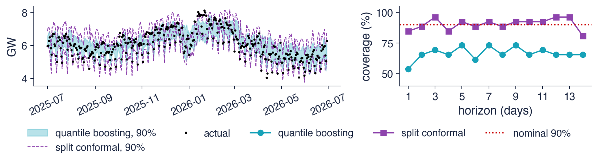
GB direct, cele 364 de prognoze din secțiunea 6 (toate originile și orizonturile); stînga: intervale și valori realizate; dreapta: acoperirea pe orizonturi
Gradient boosting cuantilic acoperă 66,5% dintre valorile realizate, cu o lățime medie de 884 MW; predicția conformală prin împărțire acoperă 90,4%, cu o lățime medie de 1310 MW. Pentru boosting-ul cuantilic, 19,0% dintre valori cad sub interval și 14,6% deasupra lui, față de cîte 5% nominal pe fiecare parte. Intervalele lui sînt prea înguste pe ambele părți, mai ales pe partea de jos, unde se află scăderile de sărbători.
Cuantilele estimate prin arbori sînt zgomotoase în cozi, unde fiecare frunză conține puține observații extreme, și reflectă ajustarea pe datele de antrenare, care este mai strînsă decît erorile din afara eșantionului. Calibrarea conformală folosește erorile reale din afara eșantionului ale prognozei punctuale pentru a fixa lățimea, deci corectează acest optimism. Un interval este informativ doar împreună cu acoperirea lui empirică, care trebuie raportată întotdeauna.
Pe scurt
GB cuantilic acoperă 66,5%, cu lățimea medie de 884 MW; predicția conformală acoperă 90,4%, cu lățimea de 1310 MW
GB cuantilic: 19,0% dintre valori sub interval și 14,6% deasupra (nominal 5% și 5%)
Cuantilele estimate prin arbori sînt zgomotoase în cozi și prea înguste; calibrarea conformală corectează lățimea cu erori reale din afara eșantionului
Raportați întotdeauna acoperirea empirică alături de un interval
Prognozele cuantilice minimizează funcția de pierdere pinball, iar un interval este o pereche de cuantile. Predicția conformală prin împărțire construiește intervalul \(\hat y \pm \hat q\) dintr-o cuantilă empirică a erorilor de calibrare. În ambele cazuri acoperirea se verifică prin walk-forward.
Pe scurt
Prognozele cuantilice minimizează funcția pinball; un interval este o pereche de cuantile
Predicția conformală: \(\hat y \pm\) o cuantilă empirică a erorilor de calibrare
Verificăm acoperirea prin walk-forward
Sinteza secțiunii
Pentru prognozele de consum, intervalele nominale de 90% ale gradient boosting cuantilic acoperă doar 66,5% dintre valorile realizate, în timp ce intervalele conformale, cu aproximativ 50% mai late, acoperă 90,4%. Acoperirea unui interval trebuie măsurată în afara eșantionului, iar calibrarea pe erorile reale de prognoză este un mod simplu de a obține acoperirea promisă.
Modele locale și globale: inflația din România
Toate modelele de pînă acum au fost locale: un model pentru fiecare serie, estimat doar pe acea serie. Un model global se estimează pe datele combinate ale mai multor serii înrudite. Secțiunea explică distincția și o testează pe inflația din România, cu gradient boosting antrenat fie doar pe România, fie pe cele 27 de țări ale Uniunii Europene (UE).
Un model local se estimează pe o singură serie, ca ARIMA, ETS și toate modelele din secțiunile anterioare. Numărul observațiilor acelei serii limitează complexitatea pe care și-o poate permite modelul: o serie lunară de 20 de ani are 240 de observații, prea puține pentru un ansamblu mare de arbori sau pentru o rețea neuronală.
Un model global se estimează pe rîndurile combinate ale mai multor serii înrudite; Montero-Manso și Hyndman (2021) și Januschowski et al. (2020) discută această clasă de modele. Fiecare serie contribuie cu rînduri care au aceleași variabile, de exemplu laguri scalate și variabile de calendar, iar un identificator al seriei poate fi adăugat. Modelul are mult mai multe rînduri pentru fiecare parametru, deci algoritmii complecși, precum gradient boosting și rețelele neuronale, devin utilizabili. Cîștigătorii competițiilor M4 și M5 au fost modele globale.
Riscul este reversul avantajului. Seriile combinate trebuie să aibă dinamici comune; dacă nu au, un model global face să dispară prin mediere ceea ce este specific fiecăreia.
Pe scurt
Model local: un model pentru fiecare serie, estimat doar pe acea serie (ARIMA, ETS, modelele de pînă acum)
puținele observații ale unei serii limitează complexitatea pe care și-o poate permite un model local
Ținta este rata anuală a inflației din România măsurată prin IAPC, \(\pi_t = 100(P_t/P_{t-12} - 1)\), unde \(P_t\) este indicele din luna \(t\), prognozată la orizonturi de 1, 3, 6 și 12 luni. Strategia este directă, iar fiecare model prognozează variația \(\pi_{t+h} - \pi_t\), nu nivelul, astfel încît arborii nu trebuie niciodată să extrapoleze.
Variabilele la originea \(t\) sînt ratele inflației \(\pi_t, \pi_{t-1}, \pi_{t-2}, \pi_{t-3}, \pi_{t-6}, \pi_{t-12}\), ultimele trei variații lunare logaritmice ale indicelui, cu sumele lor pe 3 și 6 luni, și luna calendaristică. Se compară șase modele: mersul aleator (RW), care prognozează lipsa oricărei schimbări, \(\hat\pi_{t+h} = \pi_t\); un model AR estimat prin OLS pe aceleași variabile; lasso; un random forest; gradient boosting local, antrenat doar pe România; și gradient boosting global, antrenat pe datele combinate ale celor 27 de țări UE.
Validarea este walk-forward, cu reestimare anuală: în fiecare ianuarie, fiecare model se reestimează pe toate rîndurile din 2006 încoace a căror lună-țintă este deja observată, astfel încît nicio țintă de antrenare nu se află după origine. Originile de test merg din ianuarie 2016 pînă în iulie 2026. Medeiros et al. (2021) au arătat că random forest prognozează inflația din SUA mai bine decît metodele de referință obișnuite atunci cînd folosește peste 100 de predictori; exercițiul întreabă dacă un cîștig asemănător apare cu puținii predictori disponibili pentru România.
Pe scurt
Ținta: inflația anuală IAPC a României (Eurostat), \(\pi_t = 100(P_t/P_{t-12} - 1)\), \(P_t\): indicele IAPC, la orizonturile \(h = 1, 3, 6, 12\) luni
strategie directă; modelele prognozează variația \(\pi_{t+h} - \pi_t\), deci arborii nu extrapolează niciodată nivelul
Variabile la \(t\): \(\pi_t, \pi_{t-1}, \pi_{t-2}, \pi_{t-3}, \pi_{t-6}, \pi_{t-12}\), ultimele trei variații lunare logaritmice și sumele lor pe 3 și 6 luni, luna calendaristică
modele: mers aleator (RW, \(\hat\pi_{t+h} = \pi_t\)), AR (OLS pe aceleași variabile), lasso, random forest, GB local (doar România), GB global (27 de țări UE combinate)
Walk-forward: reestimare în fiecare ianuarie pe toate rîndurile a căror lună-țintă este deja observată (din 2006); originile de test ianuarie 2016–iulie 2026
Rezultate înrudite: Medeiros et al. (2021) arată că random forest depășește metodele de referință pentru inflația SUA cu peste 100 de predictori
Panoul din stînga arată rata anuală a inflației din România (negru) și prognozele cu 12 luni înainte ale a patru modele, fiecare reprezentată la luna-țintă, astfel încît o prognoză și valoarea ei realizată sînt aliniate vertical. Inflația a urcat de sub zero în 2016 pînă la un vîrf la sfîrșitul lui 2022, apoi a scăzut; prognozele făcute cu un an înainte o urmează cu întîrziere și ratează creșterea din 2022.
Panoul din dreapta dă, pentru fiecare model și orizont, RMSE împărțit la RMSE-ul mersului aleator. O valoare sub linia punctată de la 1 înseamnă că modelul este mai precis decît prognoza fără nicio schimbare. Modelul AR se află clar sub 1 pînă la 6 luni, în timp ce majoritatea modelelor ML sînt la 1 sau deasupra.
Pe scurt
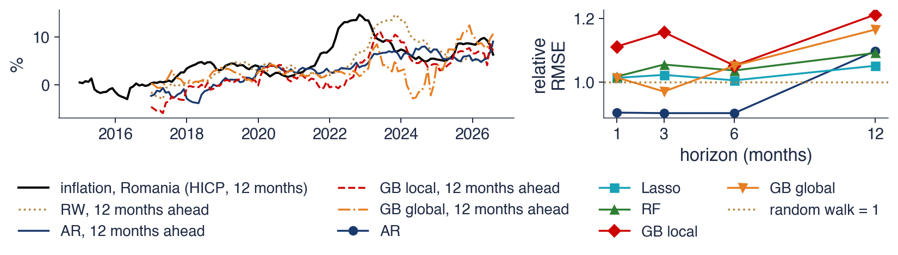
Stînga: inflația și prognozele cu 12 luni înainte, reprezentate la luna-țintă; dreapta: RMSE relativ la mersul aleator
Tabelul dă RMSE în puncte procentuale (pp) pentru fiecare model și orizont, cu raportul față de mersul aleator în paranteză. Mersul aleator are un RMSE de 0,63 pp la o lună, 1,41 pp la 3 luni, 2,25 pp la 6 luni și 3,90 pp la 12 luni: erorile cresc repede cu orizontul. Modelul AR are rapoarte de 0,90 la 1, 3 și 6 luni și 1,10 la 12 luni. Lasso și random forest au rapoarte între 1,01 și 1,09, iar gradient boosting este mai slab la cele mai multe orizonturi, cu rapoarte de pînă la 1,21 pentru modelul local la 12 luni.
Testul Diebold–Mariano, construit pe erorile pătratice și cu \(h - 1\) autocovarianțe pentru a ține seama de suprapunerea erorilor pe \(h\) pași, dă pentru AR față de mersul aleator p-value-uri de 0,019 la o lună, 0,186 la 3 luni și 0,388 la 6 luni. Pentru gradient boosting global față de cel local, p-value-urile sînt 0,117; 0,113; 0,999 și 0,828 la cele patru orizonturi. Numărul originilor de test scade de la 127 de luni la \(h = 1\) la 116 luni la \(h = 12\).
Pe scurt
RMSE (pp), relativ la RW
\(h = 1\)
\(h = 3\)
\(h = 6\)
\(h = 12\)
RW (mers aleator)
0,63 (1,00)
1,41 (1,00)
2,25 (1,00)
3,90 (1,00)
AR
0,57 (0,90)
1,28 (0,90)
2,03 (0,90)
4,28 (1,10)
Lasso
0,64 (1,01)
1,45 (1,02)
2,26 (1,01)
4,10 (1,05)
RF
0,64 (1,02)
1,49 (1,06)
2,33 (1,04)
4,25 (1,09)
GB local
0,70 (1,11)
1,64 (1,16)
2,37 (1,05)
4,72 (1,21)
GB global
0,64 (1,01)
1,37 (0,97)
2,37 (1,05)
4,54 (1,17)
DM p față de RW, AR: 0,019 (\(h = 1\)), 0,186 (\(h = 3\)), 0,388 (\(h = 6\)); GB global față de GB local: 0,117; 0,113; 0,999; 0,828
Origini de test: de la 127 (\(h = 1\)) la 116 (\(h = 12\)) luni; DM cu erori pătratice și \(h - 1\) autocovarianțe
Modelul AR liniar este cel mai precis pînă la 6 luni, cu un RMSE cu circa 10% sub cel al mersului aleator, dar avantajul lui este semnificativ doar la o lună (p = 0,019). Niciun model ML nu depășește semnificativ mersul aleator, la niciun orizont. La 12 luni niciun model nu depășește deloc mersul aleator: vîrful din 2022, 14,6% în noiembrie 2022, a venit din prețurile energiei, un șoc extern pe care trecutul inflației nu îl conținea.
Modelul global de gradient boosting este mai precis decît cel local la orizonturile scurte, cu un RMSE de 1,37 față de 1,64 pp la 3 luni, dar diferența nu este semnificativă (p = 0,113). Combinarea a 27 de țări dă arborilor suficiente rînduri din care să învețe; modelul local, cu 120–240 de rînduri la fiecare reestimare, face overfitting.
Mărimea eșantionului limitează concluziile. Circa 120 de erori lunare de test, puternic influențate de un singur episod, nu pot separa modele ale căror RMSE diferă cu 5%. Concluzia onestă pentru cele mai multe comparații este că datele nu aduc dovezi ale unei diferențe, ceea ce nu înseamnă că modelele ar fi la fel de precise.
Pe scurt
AR liniar este cel mai bun model pînă la 6 luni (cu circa 10% sub mersul aleator); niciun model ML nu depășește semnificativ mersul aleator
la 12 luni niciun model nu depășește mersul aleator: vîrful din 2022 (14,6% în noiembrie 2022) a venit din prețurile energiei, nu din trecutul inflației
GB global este mai bun decît cel local la orizonturi scurte (RMSE 1,37 față de 1,64 la \(h = 3\)), dar nesemnificativ (p = 0,113)
combinarea a 27 de țări dă arborilor suficiente rînduri; GB local, cu 120–240 de rînduri la fiecare reestimare, face overfitting
Circa 120 de erori lunare de test nu pot separa modele ale căror RMSE diferă cu 5%: concluzia onestă este „nu avem dovezi”
Un model global combină multe serii înrudite și permite algoritmilor flexibili să folosească mai multe date. Pentru inflația din România, modelul AR este cel mai precis, gradient boosting global este mai precis decît gradient boosting local, iar niciun model nu depășește mersul aleator la 12 luni. Cu eșantioane de test mici, p-value-urile Diebold–Mariano trebuie raportate alături de clasamentele RMSE.
Pe scurt
Un model global combină multe serii înrudite și permite algoritmilor flexibili să folosească mai multe date
Inflația din România: AR este cel mai bun; GB global depășește GB local; niciun model nu depășește mersul aleator la 12 luni
Eșantioane mici: raportăm p-value-urile DM, nu doar clasamentele RMSE
Sinteza secțiunii
Inflația lunară oferă prea puține observații pentru fiecare țară pentru algoritmii flexibili: un AR liniar este cel mai precis model pînă la 6 luni, iar gradient boosting cîștigă din combinarea a 27 de țări fără să devină mai precis decît mersul aleator. Comparația arată și limitele inferenței cu circa 120 de erori lunare de test.
Aplicații în finanțe: volatilitatea și semnul randamentului
Capitolele 1 și 5 au arătat că mărimea randamentelor zilnice este previzibilă, iar direcția lor nu. Secțiunea verifică dacă învățarea automată schimbă această imagine. Prima aplicație prognozează volatilitatea realizată (realised volatility) față de modelul HAR; a doua prezice semnul randamentului de mîine față de reperul corect.
Ținta este logaritmul varianței zilnice medii pe următoarele 5 zile de tranzacționare. Varianța zilnică nu se observă, deci se estimează din prețurile de deschidere, maxim, minim și închidere ale fiecărei zile, după Garman și Klass (1980):
unde \(O_t\),\(H_t\),\(L_t\) și \(C_t\) sînt prețurile de deschidere, maxim, minim și închidere din ziua \(t\). Primul termen este pătratul randamentului de peste noapte; ceilalți doi formează estimatorul Garman–Klass al varianței din timpul ședinței de tranzacționare, care folosește amplitudinea zilnică și este mult mai precis decît pătratul unui randament de la închidere la închidere. Volatilitatea este persistentă și previzibilă (Capitolul 5), deci aceasta este o problemă în care ML ar putea găsi structură.
Reperul este modelul autoregresiv eterogen (heterogeneous autoregressive, HAR) al lui Corsi (2009), o regresie OLS pe logaritmul varianței din ultima zi, săptămînă și lună:
unde \(\bar\sigma^2_{a:b}\) este media lui \(\hat\sigma^2\) din ziua \(a\) pînă în ziua \(b\), iar \(u_t\) este eroarea. Cele trei medii reprezintă participanți la piață cu orizonturi zilnice, săptămînale și lunare, iar împreună reproduc scăderea lentă a volatilității. Modelele ML primesc cele trei variabile HAR și încă 8: alte laguri ale varianței zilnice, media trimestrială, randamentul zilnic, partea lui negativă și valoarea lui absolută.
Pe scurt
Ținta: logaritmul varianței zilnice medii pe următoarele 5 zile; aproximarea varianței zilnice din prețurile de deschidere, maxim, minim și închidere Garman și Klass (1980)
\(\hat\sigma_t^2 = [\ln(O_t/C_{t-1})]^2 + \frac12[\ln(H_t/L_t)]^2 - (2\ln 2 - 1)[\ln(C_t/O_t)]^2\): pătratul randamentului de peste noapte plus termenul Garman–Klass
\(O_t\), \(H_t\), \(L_t\), \(C_t\): prețurile de deschidere, maxim, minim și închidere din ziua \(t\)
volatilitatea este persistentă și previzibilă (Capitolul 5): terenul potrivit pentru ML
Modelul HAR (heterogeneous autoregressive) Corsi (2009): OLS pe logaritmul varianței din ultima zi, săptămînă și lună
\(\ln \bar\sigma^2_{t+1:t+5} = c + \beta_d \ln\hat\sigma_t^2 + \beta_w \ln\bar\sigma^2_{t-4:t} + \beta_m \ln\bar\sigma^2_{t-21:t} + u_t\); \(\bar\sigma^2_{a:b}\): media lui \(\hat\sigma^2\) în zilele de la \(a\) la \(b\); \(u_t\): eroarea
modelele ML adaugă 8 variabile: laguri ale varianței zilnice, media trimestrială, randamentul, partea lui negativă și valoarea lui absolută
Modelele se evaluează prin walk-forward din 2013, cu reestimare anuală și cu un spațiu liber de 5 zile între datele de antrenare și cele de test, deoarece țintele pe 5 zile se suprapun. Acuratețea se măsoară relativ la HAR prin \(R^2\) în afara eșantionului:
unde \(y_t\) este logaritmul varianței realizate, iar \(\hat y_t\) și \(\hat y_t^{\text{HAR}}\) sînt prognozele modelului și ale HAR. O valoare pozitivă înseamnă că modelul are o eroare pătratică mai mică decît HAR.
A doua măsură este funcția de pierdere QLIKE a lui Patton (2011), funcția de pierdere quasi-likelihood pentru prognozele varianței folosită în Capitolul 5:
\[L(\sigma^2, h) = \frac{\sigma^2}{h} + \ln h ,\]
(9.10)
unde \(\sigma^2\) este varianța realizată, iar \(h\) prognoza varianței. Pentru un \(\sigma^2\) dat, pierderea este minimă la \(h = \sigma^2\) și penalizează prognozele prea mici mai mult decît pe cele prea mari. Patton (2011) a arătat că ea este robustă la zgomotul aproximării varianței: ordonează prognozele la fel cum le-ar ordona varianța adevărată, neobservată. Valorile mai mici sînt mai bune, iar testul Diebold–Mariano din Capitolul 4 se aplică diferențelor zilnice ale QLIKE.
Pe scurt
Walk-forward anual din 2013, cu un spațiu de 5 zile între antrenare și test
\(R^2\) în afara eșantionului față de HAR: \(R^2_{\text{HAR}} = 1 - \sum_t (y_t - \hat y_t)^2 / \sum_t (y_t - \hat y_t^{\text{HAR}})^2\)
\(y_t\): logaritmul varianței realizate; \(\hat y_t\), \(\hat y_t^{\text{HAR}}\): prognozele modelului și ale HAR; pozitiv: mai precis decît HAR
QLIKE Patton (2011): \(L(\sigma^2, h) = \sigma^2/h + \ln h\), funcția de pierdere quasi-likelihood pentru varianță (Capitolul 5); o valoare mai mică este mai bună
\(\sigma^2\): varianța realizată; \(h\): prognoza varianței; pentru un \(\sigma^2\) dat, pierderea este minimă la \(h = \sigma^2\) și penalizează mai mult prognozele prea mici
robustă la zgomotul aproximării varianței: ordonează prognozele la fel ca varianța adevărată
Testul Diebold–Mariano (Capitolul 4) pe diferențele zilnice ale QLIKE
Tabelul raportează, pentru S&P 500 și indicele german DAX, \(R^2\) în afara eșantionului relativ la HAR, în procente, QLIKE mediu și statistica Diebold–Mariano \(t\) față de HAR, pe 3444 și respectiv 3473 de zile de test. O statistică sub \(-1{,}96\) înseamnă că modelul are un QLIKE semnificativ mai mic decît HAR la pragul de 5%.
Lasso și MLP sînt mai precise decît HAR pe ambii indici. Pentru S&P 500, lasso are un \(R^2\) relativ la HAR de 7,1% și un QLIKE de 0,400, față de 0,414 pentru HAR (DM \(t = -5{,}12\)), iar MLP 8,3% și 0,398 (\(t = -3{,}96\)). Pentru DAX, cîștigurile de \(R^2\) sînt asemănătoare, 7,9% și 8,6%, dar doar lasso reduce semnificativ QLIKE (\(t = -2{,}42\); pentru MLP \(t = -1{,}69\)). Random forest și gradient boosting nu depășesc HAR: \(R^2\)-ul lor relativ la HAR este între \(-0{,}5\)% și 3,5%, iar QLIKE-ul lor nu este mai mic.
Cîștigul vine din variabilele suplimentare, mai ales din partea negativă a randamentului, care surprinde leverage effect din Capitolul 5: scăderile prețurilor cresc volatilitatea viitoare mai mult decît creșterile. Lasso și MLP folosesc aceste variabile prin funcții netede, în timp ce arborii taie o relație netedă în trepte, ceea ce îi costă cîștigul.
Pe scurt
Model
S&P: \(R^2\) față de HAR (%)
QLIKE
DM \(t\)
DAX: \(R^2\) față de HAR (%)
QLIKE
DM \(t\)
HAR
+0,0
0,414
–
+0,0
1,023
–
Lasso
+7,1
0,400
\(-\)5,12
+7,9
1,015
\(-\)2,42
RF
+1,0
0,416
0,32
+3,5
1,024
0,03
GB
\(-\)0,5
0,416
0,35
+1,1
1,028
0,75
MLP
+8,3
0,398
\(-\)3,96
+8,6
1,015
\(-\)1,69
3 444 și 3 473 de zile de test; DM \(t < -1{,}96\): modelul are un QLIKE semnificativ mai mic decît HAR
Lasso și MLP obțin un \(R^2\) față de HAR de 7–9% și reduc semnificativ QLIKE pe S&P 500; random forest și GB nu depășesc HAR
Cîștigul vine din variabilele suplimentare (randamentul negativ: efectul de levier din Capitolul 5), folosite lin; arborii taie o relație netedă în trepte
Prognozele volatilității în două episoade de criză
Graficul arată volatilitatea realizată anualizată a S&P 500 pe următoarele 5 zile (negru) și prognozele HAR, random forest și gradient boosting în 2020 și 2025. În martie 2020, în timpul crahului COVID-19, volatilitatea realizată a ajuns la aproximativ 100% pe an; la începutul lui aprilie 2025 a ajuns la aproximativ 70%.
În ambele episoade, toate prognozele cresc abia după ce volatilitatea realizată a crescut, și niciuna nu atinge vîrful. O prognoză construită din varianțele trecute reacționează la un șoc după ce acesta s-a produs, deci primele zile ale unei crize sînt întotdeauna subestimate. După vîrfuri, prognozele urmăresc îndeaproape scăderea volatilității. Cele trei modele rămîn tot timpul apropiate unul de altul, în acord cu diferențele mici din tabel.
Pe scurt
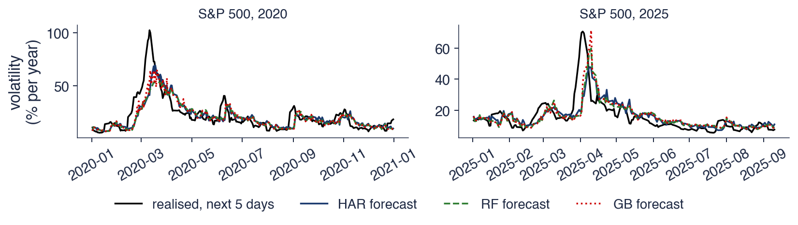
S&P 500: volatilitatea realizată anualizată a următoarelor 5 zile și prognozele HAR, random forest și GB, 2020 și 2025
A doua aplicație este o problemă de clasificare. Ținta este \(1\{r_{t+1} > 0\}\), egală cu 1 dacă randamentul de mîine este pozitiv și cu 0 altfel. Variabilele sînt ultimele cinci randamente zilnice, sumele randamentelor pe 5, 21 și 63 de zile și volatilitatea pe 21 și 63 de zile. Se compară trei clasificatori, regresia logistică (logit), un random forest și gradient boosting, evaluați prin walk-forward cu reestimare anuală din 2008.
Reperul corect nu este 50%. Indicii bursieri cresc în mai multe zile decît scad, deci regula „prezicem întotdeauna creștere”, clasa majoritară din datele de antrenare, are dreptate în 54,4% din zilele S&P 500 și în 53,8% din zilele BET din perioada de test. Un clasificator este util doar dacă depășește această regulă. Acuratețea este 53,8% pentru logit, 53,1% pentru random forest și 52,5% pentru gradient boosting pe S&P 500 și 53,7%, 53,6% și 52,2% pe BET.
Acuratețea depinde de un prag; aria de sub curba ROC (AUC) nu depinde. Ea este probabilitatea ca o zi de creștere aleasă la întîmplare să primească un scor mai mare decît o zi de scădere aleasă la întîmplare: 0,5 înseamnă nicio capacitate de ordonare, iar 1 o ordonare perfectă. Modelele au valori AUC între 0,505 și 0,533, abia peste 0,5, deci capacitatea lor de a ordona zilele după probabilitatea unei creșteri este cel mult foarte slabă.
Pe scurt
Clasificare: ținta \(1\{r_{t+1} > 0\}\) (1 dacă randamentul de mîine este pozitiv, altfel 0); variabile: ultimele cinci randamente, sume pe 5, 21, 63 de zile, volatilitatea pe 21 și 63 de zile
modele: regresia logistică (logit), random forest, GB; walk-forward anual din 2008
Reperul corect nu este 50%: piețele cresc în mai multe zile decît scad
„întotdeauna în creștere” (clasa majoritară din antrenare) are dreptate în 54,4% din zilele S&P 500 și în 53,8% din zilele BET
Niciun model nu depășește reperul; AUC (aria de sub curba ROC) 0,505–0,533, aproape de 0,5: nici capacitate de ordonare
AUC: probabilitatea ca o zi de creștere aleasă la întîmplare să primească un scor mai mare decît o zi de scădere aleasă la întîmplare; 0,5: fără putere, 1: ordonare perfectă
Graficul compară acuratețea în afara eșantionului a celor trei clasificatori cu reperul, din 2008 pînă în 2026, pe 4705 zile S&P 500 și 4686 de zile BET. Barele aurii sînt reperul, ponderea zilelor de creștere.
Pe ambii indici, fiecare clasificator este sub reper sau la nivelul lui. Pe BET, logit și random forest sînt la cel mult 0,2 puncte procentuale de reper; pe S&P 500, toate trei sînt sub el cu 0,6 pînă la 1,9 puncte. Gradient boosting, cel mai flexibil model, are cea mai mică acuratețe pe ambii indici.
Pe scurt
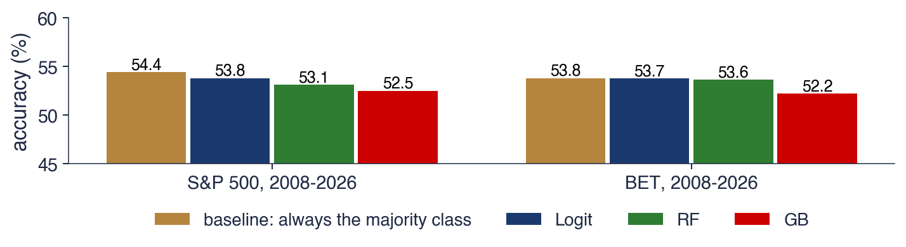
Acuratețea în afara eșantionului, 2008–2026: 4 705 de zile S&P 500 și 4 686 de zile BET
Un model cu „53% acuratețe” pare performant, deoarece are dreptate mai des decît o monedă aruncată. Față de 54,4% pentru regula „întotdeauna creștere”, el este mai slab decît a prezice în fiecare zi același răspuns. Gradient boosting pe S&P 500 este semnificativ mai slab decît reperul (p = 0,008): modelul flexibil învață din anii de antrenare tipare care sînt zgomot și plătește pentru ele în afara eșantionului.
Rezultatul este eficiența în formă slabă din Capitolul 1, văzută prin clasificatori: randamentele trecute nu conțin aproape nicio informație despre semnul randamentului următor. Împreună cu rezultatele pentru volatilitate, el confirmă ce au arătat modelele statistice din Capitolele 1 și 5: volatilitatea este previzibilă, direcția nu.
Pe scurt
Un model cu „53% acuratețe” pare performant; față de 54,4% pentru „întotdeauna în creștere”, este mai slab decît a nu face nimic
GB pe S&P 500 este semnificativ mai slab decît reperul (p = 0,008): modelele flexibile ajustează zgomotul
Eficiența în formă slabă (Capitolul 1): randamentele trecute nu conțin aproape nicio informație despre semnul următorului randament
Volatilitatea este previzibilă, direcția nu: ML confirmă ce au arătat modelele statistice din Capitolele 1 și 5
Recapitulare: volatilitatea și semnul randamentului
Pentru volatilitatea realizată, lasso și MLP cu variabile suplimentare sînt mai precise decît HAR, iar arborii nu. Pentru semnul randamentelor, comparația se face cu clasa majoritară, nu cu 50%, și niciun model nu o depășește.
Pe scurt
Volatilitatea realizată: lasso și MLP cu variabile suplimentare sînt mai precise decît HAR; arborii nu
Semnul randamentului: comparăm cu clasa majoritară, nu cu 50%; niciun model nu o depășește
Sinteza secțiunii
Învățarea automată aduce valoare în finanțe acolo unde există structură de găsit: lasso și MLP cîștigă 7–9% din \(R^2\) față de HAR în prognoza volatilității, datorită răspunsului asimetric al volatilității la randamente. Acolo unde nu există structură, ca în direcția randamentelor zilnice, modelele flexibile doar ajustează zgomotul, iar reperul clasei majoritare o arată.
Studii de caz de referință: M4, M5 și Gu, Kelly și Xiu
Aplicațiile acestui capitol folosesc o serie sau cîteva. Cele trei studii de caz de mai jos arată dovezile la o scară mult mai mare: două competiții deschise de prognoză, pe zeci de mii de serii, și un studiu de învățare automată pentru randamentele acțiunilor americane.
Din 1982, Spyros Makridakis organizează competiții deschise de prognoză, competițiile M. Fiecare metodă participantă prognozează aceleași serii, iar organizatorii evaluează prognozele pe date ascunse participanților. Aceasta este versiunea onestă a testului walk-forward: niciun participant nu își poate ajusta metoda pe datele de test, iar rezultatele compară metodele în condiții egale.
Înaintea M4, Makridakis, Spiliotis și Assimakopoulos (2018a) au comparat metode ML populare cu opt metode statistice pe 1045 de serii lunare din competiția M3. Metodele ML au fost mai puțin precise la toate orizonturile și au cerut mult mai mult calcul. Competiția M4 din 2018 (Makridakis, Spiliotis și Assimakopoulos, 2020) a folosit apoi 100 000 de serii cu șase frecvențe, de la anuală la orară, și a clasat 61 de metode după media ponderată generală (overall weighted average, OWA):
Aici \(N2\) este Naive2, prognoza naivă a seriei desezonalizate, iar un OWA sub 1 înseamnă mai precis decît Naive2. Eroarea procentuală absolută medie simetrică este \(\text{sMAPE} = \frac{200}{H}\sum_{h=1}^{H} |y_{T+h} - \hat y_{T+h}| / (|y_{T+h}| + |\hat y_{T+h}|)\), în procente. Competiția M5 din 2020 (Makridakis, Spiliotis și Assimakopoulos, 2022) a folosit 42 840 de serii zilnice ierarhice de vînzări în unități ale Walmart, cu un orizont de 28 de zile.
Pe scurt
Din 1982, Spyros Makridakis organizează competiții deschise de prognoză: toate metodele prognozează aceleași serii, evaluate de organizatori pe date ascunse
versiunea onestă a testului walk-forward: niciun participant nu își poate ajusta metoda pe datele de test
Makridakis, Spiliotis și Assimakopoulos (2018a): pe 1 045 de serii lunare din M3, metodele ML populare au fost mai puțin precise decît opt metode statistice la toate orizonturile și mult mai lente
Graficul reprezintă OWA pentru cele 59 de metode clasate în M4, propuneri și metode de referință, în funcție de locul lor în clasament, după fișierul oficial de evaluare al competiției. Culorile dau tipul metodei: statistică, combinație de metode statistice, combinație de metode statistice și ML, combinație de metode ML, ML pur, hibrid și altele. Linia punctată este Naive2 (OWA = 1), iar linia întreruptă este metoda de referință Comb; două metode cu OWA peste 1,7 sînt în afara graficului.
Primele locuri sînt dominate de combinații, cu singura metodă hibridă pe primul loc. Metodele ML pure (roșu) sînt împrăștiate: una este pe locul 23, iar celelalte sînt pe locul 46 sau mai jos, la capătul din dreapta al graficului.
Pe scurt
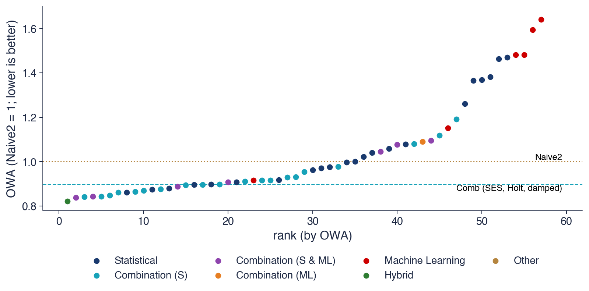
Fișierul oficial de evaluare M4 (github.com/Mcompetitions/M4-methods): OWA pentru cele 59 de metode clasate, propuneri și metode de referință, colorate după tip; 2 metode cu OWA peste 1,7 nu apar pe grafic
Cîștigătorul a fost modelul hibrid ES-RNN al lui Smyl (2020): ecuații de netezire exponențială ai căror parametri sînt învățați de un LSTM antrenat împreună pe toate seriile, ceea ce îl face un model global. El a obținut un OWA de 0,821 și un sMAPE de 11,37%. Metoda de referință Comb, media simplă a netezirii exponențiale simple (SES), a trendului liniar Holt și a metodei cu trend amortizat, a obținut un OWA de 0,898 și un sMAPE de 12,55%; Naive2 a avut un sMAPE de 13,56%.
Cele șase metode ML pure au avut rezultate slabe: cea mai bună dintre ele a fost pe locul 23, cu un OWA de 0,915; niciuna nu a fost mai precisă decît Comb și doar una a fost mai precisă decît Naive2, după cum raportează Makridakis, Spiliotis și Assimakopoulos (2018b). Douăsprezece dintre cele mai precise 17 metode au fost combinații. Pe serii scurte și eterogene, lecția este combinarea modelelor statistice sau învățarea ML de la toate seriile; ML pur, aplicat serie cu serie, pierde în fața metodelor de referință simple.
Pe scurt
Cîștigătorul: modelul hibrid ES-RNN al lui Smyl (2020), netezire exponențială în interiorul unui LSTM antrenat pe toate seriile (un model global): OWA 0,821, sMAPE 11,37%
Comb, media metodelor SES, Holt și trend amortizat: OWA 0,898, sMAPE 12,55%; Naive2: sMAPE 13,56%
M5 a atras 5507 echipe din 101 țări. Datele au fost vînzările zilnice în unități a 3049 de produse în 10 magazine Walmart, organizate într-o ierarhie de produse, departamente, categorii, magazine și state. Măsura erorii a fost rădăcina erorii pătratice medii scalate și ponderate (weighted root mean squared scaled error, WRMSSE). Pentru fiecare serie, RMSSE împarte RMSE-ul prognozelor la RMSE-ul în eșantion al prognozei naive pe un pas; WRMSSE face media RMSSE pe toate seriile, cu ponderi proporționale cu valoarea vînzărilor lor.
Metoda cîștigătoare a obținut un WRMSSE de 0,520, cu 22,4% mai precis decît cea mai bună metodă de referință, netezirea exponențială de jos în sus (bottom-up), cu 0,671. Cele mai multe metode de top au folosit LightGBM (Ke et al., 2017). Cîștigătorul a făcut media unor modele LightGBM combinate pe magazin, pe categorie și pe departament, cu strategii atît recursive, cît și directe.
M5 a avut exact condițiile în care ML cîștigă: multe serii înrudite, modele globale antrenate pe toate, variabile bogate de calendar și de preț, precum sărbătorile, promoțiile și schimbările de preț. Aceste condiții diferă puternic de cele ale aplicațiilor pe o singură serie din acest capitol.
Gu, Kelly și Xiu (2020) au aplicat învățarea automată randamentelor lunare a circa 30 000 de acțiuni americane, din 1957 pînă în 2016, cu 920 de predictori construiți din caracteristicile acțiunilor, din interacțiunile lor cu variabile macroeconomice și din variabile binare pentru industrii. Ei au comparat 12 metode, de la OLS la rețele neuronale cu cinci straturi ascunse, într-o schemă walk-forward: 18 ani de antrenare, 12 ani de validare și 30 de ani de test, cu reestimare anuală.
\(R^2\)-ul lunar în afara eșantionului a fost cel mult 0,40%, atins de o rețea cu trei straturi ascunse. OLS cu toți predictorii a avut un \(R^2\) de \(-3{,}46\)%: cu atît de mulți predictori, cele mai mici pătrate nepenalizate fac un overfitting puternic. Oricît de mică, predictibilitatea are valoare economică. Un portofoliu long-short, care cumpără decila de acțiuni cu cele mai mari prognoze și vinde decila cu cele mai mici, atinge un raport Sharpe anual de 1,35 cu rețeaua cu patru straturi, față de 0,61 pentru OLS-3, o regresie OLS pe trei predictori clasici. Raportul Sharpe este randamentul mediu anual împărțit la abaterea lui standard anuală.
Gu, Kelly și Xiu (2020): randamentele lunare a circa 30 000 de acțiuni americane, 1957–2016, 920 de predictori
12 metode, de la OLS la rețele neuronale cu cinci straturi
walk-forward: 18 ani de antrenare, 12 de validare, 30 de ani de test, reestimare anuală
\(R^2\) lunar în afara eșantionului: cel mult 0,40% (rețea cu trei straturi); OLS cu toți predictorii: \(-3{,}46\)%
\(R^2\) mic, valoare mare: un portofoliu long-short ordonat după prognoze atinge un raport Sharpe anual de 1,35 (patru straturi), față de 0,61 pentru OLS-3
long-short: cumpărăm decila cu cele mai mari prognoze și vindem decila cu cele mai mici
raportul Sharpe: randamentul mediu anual împărțit la abaterea lui standard anuală
Gu, Kelly și Xiu (2020): \(R^2\) mic, valoare economică mare
Graficul reproduce două tabele publicate ale lucrării. Panoul din stînga dă \(R^2\)-ul lunar în afara eșantionului pentru toate acțiunile (Tabelul 1 al lucrării), iar panoul din dreapta raportul Sharpe anualizat al portofoliului long-short pe decile, ponderat cu valoarea de piață (Tabelul 7), pentru fiecare metodă; culorile separă modelele liniare, arborii și rețelele neuronale. Sufixul +H marchează modelele estimate cu funcția de pierdere Huber, care reduce influența randamentelor extreme.
Metodele sînt OLS-3, o regresie OLS pe mărime, raportul valoare contabilă/valoare de piață și momentum; PLS și PCR, partial least squares și regresia pe componente principale; ENet, elastic net, care combină penalizările ridge și lasso; GLM, un model liniar generalizat cu spline; RF, random forest; GBRT, arbori de regresie cu gradient boosting; și NN1–NN5, rețele cu unul pînă la cinci straturi ascunse. Ambele panouri arată aceeași ordine: modelele neliniare, și mai ales rețelele, au \(R^2\) și rapoarte Sharpe mai mari decît cele liniare. Un \(R^2\) sub o jumătate de procent pe lună este mic pentru o singură prognoză, dar aplicat lunar pe mii de acțiuni este suficient pentru un portofoliu profitabil.
Pe scurt
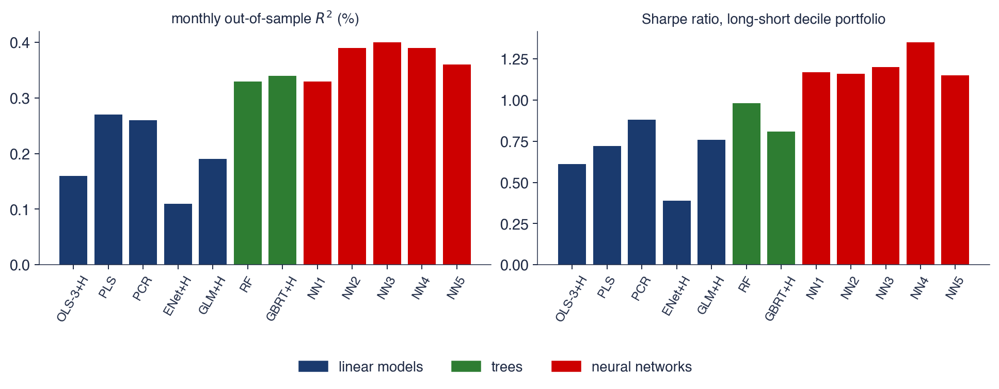
Cifrele publicate: Tabelul 1 (\(R^2\) lunar în afara eșantionului, toate acțiunile) și Tabelul 7 (raportul Sharpe anualizat al portofoliului long-short pe decile, ponderat cu valoarea); +H: funcția de pierdere Huber
OLS-3: OLS pe mărime, raportul valoare contabilă/valoare de piață și momentum; PLS, PCR: partial least squares, regresie pe componente principale; ENet: elastic net
GLM: model liniar generalizat cu spline; RF: random forest; GBRT: arbori de regresie cu gradient boosting; NN1–NN5: rețele cu 1–5 straturi ascunse
În M4, cele mai precise au fost combinațiile și un model hibrid global, în timp ce ML pur, aplicat serie cu serie, a pierdut în fața metodelor de referință simple. În M5, modelele globale LightGBM cu variabile de calendar și de preț au cîștigat clar. Gu, Kelly și Xiu (2020) au găsit o predictibilitate mică, dar reală, în secțiunea transversală a randamentelor acțiunilor, unde modelele neliniare aduc valoare economică.
Pe scurt
M4: cele mai precise sînt combinațiile și un model hibrid global; ML pur local este mai slab decît metodele simple
M5: modelele globale LightGBM cu variabile de calendar și preț sînt clar cele mai precise
Gu, Kelly și Xiu: predictibilitate mică, dar reală, în secțiunea transversală a acțiunilor; modelele neliniare aduc valoare
Sinteza secțiunii
Dovezile la scară mare concordă cu aplicațiile capitolului. Învățarea automată cîștigă acolo unde sînt disponibile multe serii înrudite, modele globale și variabile bogate, ca în M5 și în secțiunea transversală a acțiunilor; pe serii scurte și eterogene, analizate una cîte una, combinațiile de metode statistice rămîn greu de depășit.
Contribuția posibilă a AI
Secțiunea trimite la foundation models, cazul extrem al modelelor globale, și enumeră ce poate aduce un asistent AI unui proiect de prognoză ML și ce trebuie să verifice analistul, deoarece erorile tipice ale unor asemenea proiecte, în primul rînd leakage-ul, nu produc niciun mesaj de eroare.
Un foundation model pentru serii de timp este o rețea neuronală mare, de obicei un transformer, pre-antrenată pe milioane de serii și aplicată apoi unei serii noi fără reantrenare, ceea ce se numește prognoză zero-shot. Chronos, TimesFM, Moirai și Lag-Llama sînt exemple. Ele sînt modele globale duse la extrem: un singur model pentru aproape orice serie. Capitolul 11, un capitol de studiu individual, le prezintă.
Regulile acestui capitol li se aplică neschimbate. Datele de test trebuie să fie date pe care modelul nu le-a văzut la pre-antrenare, lucru greu de garantat pentru seriile publice; evaluarea este walk-forward; iar comparația folosește aceleași metode de referință, MASE și testul Diebold–Mariano.
Pe scurt
Un foundation model pentru serii de timp este o rețea mare (un transformer) pre-antrenată pe milioane de serii și folosită fără reantrenare (zero-shot)
Un asistent poate ajuta în trei feluri. Poate scrie o primă versiune a codului: tabelul de variabile, bucla walk-forward și tabelul de evaluare. Poate da o a doua explicație a unei metode, de exemplu boosting-ul, porțile LSTM sau predicția conformală. Și poate explora deodată multe seturi de variabile și hiperparametri, cu condiția ca explorarea să folosească doar datele de validare, iar datele de test să rămînă neatinse.
Exemplul de prompt precizează fiecare alegere care contează pentru un rezultat fără leakage: variabilele (laguri, medii mobile, calendar), modelul (HistGradientBoostingRegressor), strategia (directă, orizonturi 1–14), evaluarea (walk-forward față de prognoza naivă sezonieră, cu MASE și testul Diebold–Mariano) și regula ca fiecare pas de preprocesare să fie reestimat în fiecare fereastră de antrenare. Un prompt precis produce cod ale cărui rezultate pot fi verificate cu cele din acest capitol.
Pe scurt
Cod: o primă versiune a tabelului de variabile, a buclei walk-forward și a tabelului de evaluare
Explicații: o a doua explicație a boosting-ului, a porților LSTM sau a predicției conformale
Explorare: multe seturi de variabile și hiperparametri deodată (doar pe datele de validare)
Exemplu de prompt
Write Python code that builds lag, rolling-mean and calendar features for daily electricity load, trains HistGradientBoostingRegressor with the direct strategy for horizons 1-14, evaluates it walk-forward against the seasonal naive forecast with MASE and the Diebold-Mariano test, and refits every preprocessing step inside each training window.
Verificările urmează erorile descrise în acest capitol. Fiecare variabilă trebuie să folosească doar date de pînă la origine; cea mai simplă verificare este tipărirea cîtorva rînduri ale tabelului și controlul de mînă al deplasării lagurilor și a ferestrelor mobile. Codul nu trebuie să conțină amestecarea aleatoare a rîndurilor în validarea încrucișată, de exemplu KFold(shuffle=True), și nici scalare sau selecție de variabile estimate pe tot eșantionul.
Metodele de referință trebuie să fie prezente: prognoza naivă sau naivă sezonieră și ETS sau ARIMA, evaluate pe aceleași origini. O comparație de prognoze are nevoie de un test Diebold–Mariano, iar un clasificator de reperul clasei majoritare. Semințele aleatoare trebuie fixate, iar concluzia trebuie să se mențină la schimbarea seminței. În final, fiecare referință citată de un asistent trebuie să existe, lucru care se verifică prin DOI-ul ei.
Pe scurt
Fiecare variabilă folosește doar date pînă la origine: verificați deplasarea lagurilor și a ferestrelor mobile pe un tabel tipărit
Fără KFold(shuffle=True), fără scalare sau selecție de variabile estimate pe tot eșantionul
Metodele de referință sînt prezente: naivă sau naivă sezonieră, ETS sau ARIMA, pe aceleași origini
Comparația are un test DM; clasificarea are reperul clasei majoritare
Semințele sînt fixate, iar rezultatul se menține cu o altă sămînță
Fiecare referință citată există: verificați DOI-ul
Sinteza secțiunii
Un asistent poate schița tabelul de variabile, bucla de validare și evaluarea și poate explica metodele, dar rezultatul lui se acceptă doar după verificările privind leakage-ul, metodele de referință, testele de semnificație, semințele și referințele.
Rezumat
Rezumatul adună ideile principale ale capitolului, formulele de reținut și trei întrebări de autoevaluare.
Prognoza cu învățare automată este învățare supervizată pe un tabel de laguri, statistici pe ferestre mobile și variabile de calendar cunoscute la origine. Pentru serii de timp, doar validarea walk-forward este onestă; leakage-ul produce scoruri spectaculoase și false. Ridge și lasso, random forest, gradient boosting, MLP și LSTM au fiecare un parametru de complexitate pe care îl fixează validarea, iar arborii nu pot extrapola, deci modelează variații, nu niveluri.
Pe datele acestui capitol, modelele liniare cu variabile bune au cel puțin aceeași precizie ca ML pentru consumul de energie electrică și pentru inflație; ML ajută pentru volatilitate, unde lasso și MLP depășesc HAR; iar niciun model nu prognozează semnul randamentelor zilnice. ML cîștigă cu multe serii înrudite, ca în modelele globale, în hibridul din M4 și în modelele LightGBM din M5. Oricare ar fi metoda, ea se compară cu metodele de referință, cu MASE și cu testul Diebold–Mariano.
Pe scurt
Prognoza ML = învățare supervizată pe un tabel de laguri, statistici pe ferestre mobile și variabile de calendar cunoscute la origine
Doar validare walk-forward; leakage-ul produce scoruri spectaculoase și false
Ridge și lasso, random forest, GB, MLP, LSTM: fiecare are un parametru de complexitate fixat prin validare
Arborii nu pot extrapola: modelăm variații, nu niveluri
Datele noastre: modelele liniare cu variabile bune au cel puțin aceeași precizie ca ML pentru consum și inflație; ML ajută pentru volatilitate; niciun model nu prognozează semnul randamentelor
ML este superior cînd există multe serii înrudite (modele globale, hibridul din M4, LightGBM în M5); comparăm întotdeauna cu metode de referință, MASE și DM
Tabelul adună formulele capitolului în ordinea în care au fost introduse: prognoza directă din laguri și variabilele de calendar ale zilei-țintă; penalizările ridge (9.2) și lasso; descompunerea deplasare–varianță (9.1); actualizarea boosting (9.4); MLP (9.5); celula și ieșirea LSTM (9.6); funcția de pierdere pinball (9.7); intervalul conformal prin împărțire (9.8); și MASE, MAE scalat cu MAE-ul în eșantion al prognozei naive sezoniere cu perioada \(m\).
Prima întrebare privește leakage-ul. O medie mobilă pe 7 zile centrată în \(t\) face media valorilor \(y_{t-3}, \dots, y_{t+3}\), deci, ca variabilă pentru \(y_{t+1}\), conține chiar ținta și următoarele două valori; nu este permisă. Media valorilor \(y_{t-6}, \dots, y_t\), care se termină la origine, este variabila corectă.
A doua întrebare privește extrapolarea. Un random forest antrenat pe nivelurile PIB-ului pînă în 2019 prognozează fiecare nivel ca medie a unor niveluri din antrenare, deci prognoza lui pentru 2024 nu poate depăși cel mai mare nivel văzut înainte de 2020, în timp ce PIB-ul a crescut între timp. Modelul trebuie antrenat pe ratele de creștere. A treia întrebare privește reperul: un clasificator al semnului cu acuratețea de 53% este util doar dacă depășește semnificativ ponderea zilelor de creștere din perioada de test, circa 54% pentru S&P 500. Capitolul următor, Capitolul 10, prezintă modelele în spațiul stărilor, filtrul Kalman și modelele Markov switching.
Pe scurt
Întrebare: o medie mobilă pe 7 zile centrată în \(t\) este folosită ca variabilă pentru \(y_{t+1}\). Este permis?
Răspuns: nu: conține \(y_{t+1}, y_{t+2}, y_{t+3}\); folosiți media \(y_{t-6}, \dots, y_t\)
Întrebare: un random forest antrenat pe nivelurile PIB-ului pînă în 2019 prognozează anul 2024. Ce nu funcționează?
Răspuns: prognoza lui nu poate depăși cel mai mare nivel văzut la antrenare; modelați ratele de creștere
Întrebare: un clasificator prognozează semnul randamentelor zilnice cu acuratețea de 53%. Este util?
Răspuns: doar dacă depășește semnificativ ponderea zilelor de creștere în perioada de test (circa 54% pentru S&P 500)
Urmează: Capitolul 10, modele în spațiul stărilor, filtrul Kalman și modele Markov switching
Sinteza secțiunii
Capitolul a plasat învățarea automată în cadrul de prognoză al cursului: același tabel al informației trecute, aceeași evaluare walk-forward și aceleași metode de referință. Cu aceste reguli, metodele flexibile nu cîștigă automat. Ele cîștigă atunci cînd datele le oferă ce le trebuie, multe serii înrudite, variabile bogate și o structură stabilă, iar un model liniar bine specificat rămîne reperul de depășit.
Ben Taieb, S., Bontempi, G., Atiya, A. F., & Sorjamaa, A. (2012). A review and comparison of strategies for multi-step ahead time series forecasting based on the NN5 forecasting competition. Expert Systems with Applications, 39(8), 7067–7083. doi:10.1016/j.eswa.2012.01.039
Bergmeir, C., Hyndman, R. J., & Koo, B. (2018). A note on the validity of cross-validation for evaluating autoregressive time series prediction. Computational Statistics & Data Analysis, 120, 70–83. doi:10.1016/j.csda.2017.11.003
Chen, T., & Guestrin, C. (2016). XGBoost: A scalable tree boosting system. Proceedings of the 22nd ACM SIGKDD International Conference on Knowledge Discovery and Data Mining, 785–794. doi:10.1145/2939672.2939785
Corsi, F. (2009). A simple approximate long-memory model of realized volatility. Journal of Financial Econometrics, 7(2), 174–196. doi:10.1093/jjfinec/nbp001
Diebold, F. X., & Mariano, R. S. (1995). Comparing predictive accuracy. Journal of Business & Economic Statistics, 13(3), 253–263. doi:10.1080/07350015.1995.10524599
Friedman, J. H. (2001). Greedy function approximation: A gradient boosting machine. The Annals of Statistics, 29(5), 1189–1232. doi:10.1214/aos/1013203451
Garman, M. B., & Klass, M. J. (1980). On the estimation of security price volatilities from historical data. The Journal of Business, 53(1), 67–78. doi:10.1086/296072
Gu, S., Kelly, B., & Xiu, D. (2020). Empirical asset pricing via machine learning. The Review of Financial Studies, 33(5), 2223–2273. doi:10.1093/rfs/hhaa009
Harvey, D., Leybourne, S., & Newbold, P. (1997). Testing the equality of prediction mean squared errors. International Journal of Forecasting, 13(2), 281–291. doi:10.1016/S0169-2070(96)00719-4
Hastie, T., Tibshirani, R., & Friedman, J. (2009). The Elements of Statistical Learning (2nd ed.). Springer. doi:10.1007/978-0-387-84858-7
Hewamalage, H., Bergmeir, C., & Bandara, K. (2021). Recurrent neural networks for time series forecasting: Current status and future directions. International Journal of Forecasting, 37(1), 388–427. doi:10.1016/j.ijforecast.2020.06.008
Hochreiter, S., & Schmidhuber, J. (1997). Long short-term memory. Neural Computation, 9(8), 1735–1780. doi:10.1162/neco.1997.9.8.1735
Hoerl, A. E., & Kennard, R. W. (1970). Ridge regression: Biased estimation for nonorthogonal problems. Technometrics, 12(1), 55–67. doi:10.1080/00401706.1970.10488634
Hornik, K., Stinchcombe, M., & White, H. (1989). Multilayer feedforward networks are universal approximators. Neural Networks, 2(5), 359–366. doi:10.1016/0893-6080(89)90020-8
Huang, C., & Petukhina, A. (2022). Applied Time Series Analysis and Forecasting with Python. Springer. doi:10.1007/978-3-031-13584-2
Hyndman, R. J., & Athanasopoulos, G. (2021). Forecasting: Principles and Practice (3rd ed.), Section 12.4, Neural network models. OTexts. otexts.com/fpp3/nnetar.html
Hyndman, R. J., & Koehler, A. B. (2006). Another look at measures of forecast accuracy. International Journal of Forecasting, 22(4), 679–688. doi:10.1016/j.ijforecast.2006.03.001
Januschowski, T., Gasthaus, J., Wang, Y., Salinas, D., Flunkert, V., Bohlke-Schneider, M., & Callot, L. (2020). Criteria for classifying forecasting methods. International Journal of Forecasting, 36(1), 167–177. doi:10.1016/j.ijforecast.2019.05.008
Kaufman, S., Rosset, S., Perlich, C., & Stitelman, O. (2012). Leakage in data mining: Formulation, detection, and avoidance. ACM Transactions on Knowledge Discovery from Data, 6(4), 1–21. doi:10.1145/2382577.2382579
Ke, G., Meng, Q., Finley, T., Wang, T., Chen, W., Ma, W., Ye, Q., & Liu, T.-Y. (2017). LightGBM: A highly efficient gradient boosting decision tree. Advances in Neural Information Processing Systems, 30. proceedings.neurips.cc
Koenker, R., & Bassett, G. (1978). Regression quantiles. Econometrica, 46(1), 33–50. doi:10.2307/1913643
Lei, J., G'Sell, M., Rinaldo, A., Tibshirani, R. J., & Wasserman, L. (2018). Distribution-free predictive inference for regression. Journal of the American Statistical Association, 113(523), 1094–1111. doi:10.1080/01621459.2017.1307116
Lim, B., & Zohren, S. (2021). Time-series forecasting with deep learning: A survey. Philosophical Transactions of the Royal Society A, 379(2194), 20200209. doi:10.1098/rsta.2020.0209
Makridakis, S., Spiliotis, E., & Assimakopoulos, V. (2018a). Statistical and machine learning forecasting methods: Concerns and ways forward. PLOS ONE, 13(3), e0194889. doi:10.1371/journal.pone.0194889
Makridakis, S., Spiliotis, E., & Assimakopoulos, V. (2018b). The M4 Competition: Results, findings, conclusion and way forward. International Journal of Forecasting, 34(4), 802–808. doi:10.1016/j.ijforecast.2018.06.001
Makridakis, S., Spiliotis, E., & Assimakopoulos, V. (2020). The M4 Competition: 100,000 time series and 61 forecasting methods. International Journal of Forecasting, 36(1), 54–74. doi:10.1016/j.ijforecast.2019.04.014
Makridakis, S., Spiliotis, E., & Assimakopoulos, V. (2022). M5 accuracy competition: Results, findings, and conclusions. International Journal of Forecasting, 38(4), 1346–1364. doi:10.1016/j.ijforecast.2021.11.013
Medeiros, M. C., Vasconcelos, G. F. R., Veiga, Á., & Zilberman, E. (2021). Forecasting inflation in a data-rich environment: The benefits of machine learning methods. Journal of Business & Economic Statistics, 39(1), 98–119. doi:10.1080/07350015.2019.1637745
Montero-Manso, P., & Hyndman, R. J. (2021). Principles and algorithms for forecasting groups of time series: Locality and globality. International Journal of Forecasting, 37(4), 1632–1653. doi:10.1016/j.ijforecast.2021.03.004
Patton, A. J. (2011). Volatility forecast comparison using imperfect volatility proxies. Journal of Econometrics, 160(1), 246–256. doi:10.1016/j.jeconom.2010.03.034
Rumelhart, D. E., Hinton, G. E., & Williams, R. J. (1986). Learning representations by back-propagating errors. Nature, 323(6088), 533–536. doi:10.1038/323533a0
Salinas, D., Flunkert, V., Gasthaus, J., & Januschowski, T. (2020). DeepAR: Probabilistic forecasting with autoregressive recurrent networks. International Journal of Forecasting, 36(3), 1181–1191. doi:10.1016/j.ijforecast.2019.07.001
Smyl, S. (2020). A hybrid method of exponential smoothing and recurrent neural networks for time series forecasting. International Journal of Forecasting, 36(1), 75–85. doi:10.1016/j.ijforecast.2019.03.017
Tibshirani, R. (1996). Regression shrinkage and selection via the lasso. Journal of the Royal Statistical Society: Series B, 58(1), 267–288. doi:10.1111/j.2517-6161.1996.tb02080.x
Bibliografie
Ben Taieb, S., Bontempi, G., Atiya, A. F., & Sorjamaa, A. (2012). A review and comparison of strategies for multi-step ahead time series forecasting based on the NN5 forecasting competition. Expert Systems with Applications, 39(8), 7067–7083. https://doi.org/10.1016/j.eswa.2012.01.039
Bergmeir, C., Hyndman, R. J., & Koo, B. (2018). A note on the validity of cross-validation for evaluating autoregressive time series prediction. Computational Statistics & Data Analysis, 120, 70–83. https://doi.org/10.1016/j.csda.2017.11.003
Chen, T., & Guestrin, C. (2016). XGBoost: A scalable tree boosting system. Proceedings of the 22nd ACM SIGKDD International Conference on Knowledge Discovery and Data Mining, 785–794. https://doi.org/10.1145/2939672.2939785
Corsi, F. (2009). A simple approximate long-memory model of realized volatility. Journal of Financial Econometrics, 7(2), 174–196. https://doi.org/10.1093/jjfinec/nbp001
Friedman, J. H. (2001). Greedy function approximation: A gradient boosting machine. The Annals of Statistics, 29(5), 1189–1232. https://doi.org/10.1214/aos/1013203451
Garman, M. B., & Klass, M. J. (1980). On the estimation of security price volatilities from historical data. The Journal of Business, 53(1), 67–78. https://doi.org/10.1086/296072
Gu, S., Kelly, B., & Xiu, D. (2020). Empirical asset pricing via machine learning. The Review of Financial Studies, 33(5), 2223–2273. https://doi.org/10.1093/rfs/hhaa009
Harvey, D., Leybourne, S., & Newbold, P. (1997). Testing the equality of prediction mean squared errors. International Journal of Forecasting, 13(2), 281–291. https://doi.org/10.1016/S0169-2070(96)00719-4
Hewamalage, H., Bergmeir, C., & Bandara, K. (2021). Recurrent neural networks for time series forecasting: Current status and future directions. International Journal of Forecasting, 37(1), 388–427. https://doi.org/10.1016/j.ijforecast.2020.06.008
Hornik, K., Stinchcombe, M., & White, H. (1989). Multilayer feedforward networks are universal approximators. Neural Networks, 2(5), 359–366. https://doi.org/10.1016/0893-6080(89)90020-8
Hyndman, R. J., & Athanasopoulos, G. (2021). Forecasting: Principles and Practice (3rd ed.), Section 12.4, Neural network models. OTexts. https://otexts.com/fpp3/nnetar.html
Januschowski, T., Gasthaus, J., Wang, Y., Salinas, D., Flunkert, V., Bohlke-Schneider, M., & Callot, L. (2020). Criteria for classifying forecasting methods. International Journal of Forecasting, 36(1), 167–177. https://doi.org/10.1016/j.ijforecast.2019.05.008
Kaufman, S., Rosset, S., Perlich, C., & Stitelman, O. (2012). Leakage in data mining: Formulation, detection, and avoidance. ACM Transactions on Knowledge Discovery from Data, 6(4), 1–21. https://doi.org/10.1145/2382577.2382579
Lei, J., G'Sell, M., Rinaldo, A., Tibshirani, R. J., & Wasserman, L. (2018). Distribution-free predictive inference for regression. Journal of the American Statistical Association, 113(523), 1094–1111. https://doi.org/10.1080/01621459.2017.1307116
Lim, B., & Zohren, S. (2021). Time-series forecasting with deep learning: A survey. Philosophical Transactions of the Royal Society A, 379(2194), 20200209. https://doi.org/10.1098/rsta.2020.0209
Makridakis, S., Spiliotis, E., & Assimakopoulos, V. (2018a). Statistical and machine learning forecasting methods: Concerns and ways forward. PLOS ONE, 13(3), e0194889. https://doi.org/10.1371/journal.pone.0194889
Makridakis, S., Spiliotis, E., & Assimakopoulos, V. (2018b). The M4 Competition: Results, findings, conclusion and way forward. International Journal of Forecasting, 34(4), 802–808. https://doi.org/10.1016/j.ijforecast.2018.06.001
Makridakis, S., Spiliotis, E., & Assimakopoulos, V. (2020). The M4 Competition: 100,000 time series and 61 forecasting methods. International Journal of Forecasting, 36(1), 54–74. https://doi.org/10.1016/j.ijforecast.2019.04.014
Makridakis, S., Spiliotis, E., & Assimakopoulos, V. (2022). M5 accuracy competition: Results, findings, and conclusions. International Journal of Forecasting, 38(4), 1346–1364. https://doi.org/10.1016/j.ijforecast.2021.11.013
Medeiros, M. C., Vasconcelos, G. F. R., Veiga, Á., & Zilberman, E. (2021). Forecasting inflation in a data-rich environment: The benefits of machine learning methods. Journal of Business & Economic Statistics, 39(1), 98–119. https://doi.org/10.1080/07350015.2019.1637745
Montero-Manso, P., & Hyndman, R. J. (2021). Principles and algorithms for forecasting groups of time series: Locality and globality. International Journal of Forecasting, 37(4), 1632–1653. https://doi.org/10.1016/j.ijforecast.2021.03.004
Rumelhart, D. E., Hinton, G. E., & Williams, R. J. (1986). Learning representations by back-propagating errors. Nature, 323(6088), 533–536. https://doi.org/10.1038/323533a0
Salinas, D., Flunkert, V., Gasthaus, J., & Januschowski, T. (2020). DeepAR: Probabilistic forecasting with autoregressive recurrent networks. International Journal of Forecasting, 36(3), 1181–1191. https://doi.org/10.1016/j.ijforecast.2019.07.001
Smyl, S. (2020). A hybrid method of exponential smoothing and recurrent neural networks for time series forecasting. International Journal of Forecasting, 36(1), 75–85. https://doi.org/10.1016/j.ijforecast.2019.03.017